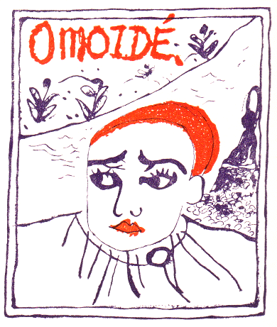
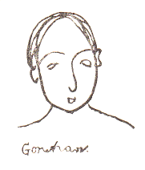
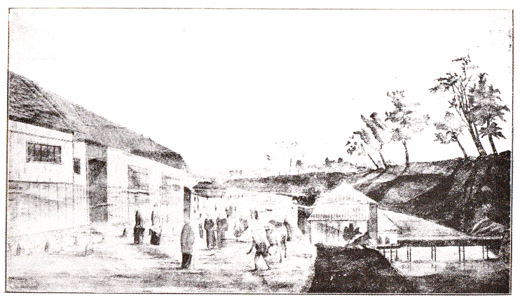
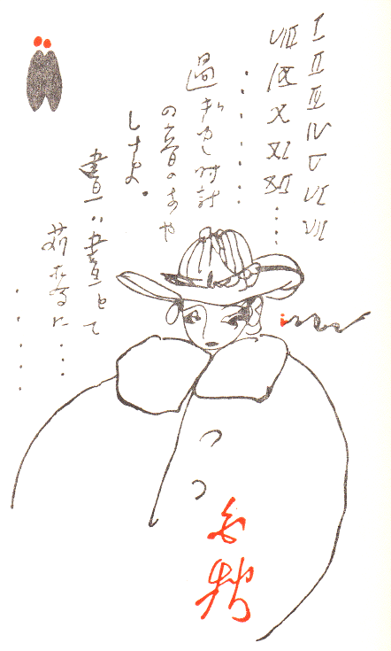
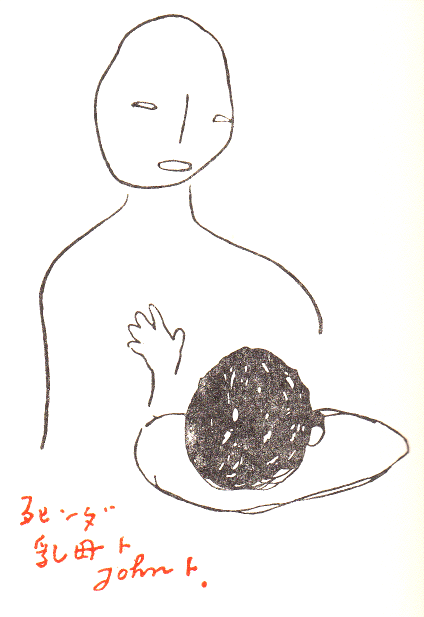
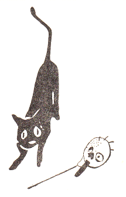
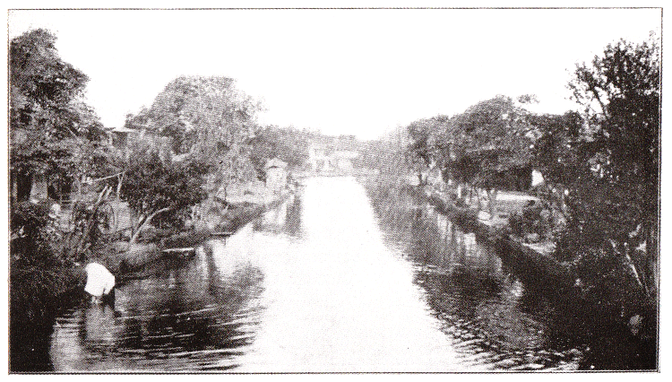

［＃ページの左右中央］
この小さき抒情小曲集をそのかみのあえかなりしわが母上と、愛弟 Tinka John に贈る。
Tonka John.
［＃改丁］

［＃改丁］
…………時は逝く、何時しらず柔らかに影してぞゆく、
時は逝く、赤き蒸汽の船腹の過ぎゆくごとく。
（過ぎし日第二十）
時は過ぎた。さうして温かい
苅麥のほめきに、赤い
首の螢に、或は青いとんぼの眼に、黒猫の美くしい毛色に、謂れなき不可思議の愛着を寄せた私の幼年時代も何時の間にか慕はしい「思ひ出」の哀歡となつてゆく。
捉へがたい感覺の記憶は今日もなほ私の心を
苛だたしめ、恐れしめ、歎かしめ、苦しませる。この小さな抒情小曲集に歌はれた私の十五歳以前の Life はいかにも幼稚な
柔順しい、然し飾氣のない、時としては淫婦の手を恐るゝ赤い石竹の花のやうに無智であつた。さうして驚き易い私の皮膚と靈はつねに
螽斯の薄い四肢のやうに新しい發見の前に喜び顫へた。兎に角私は感じた。さうして生れたまゝの水々しい五官の感觸が私にある「神秘」を傅へ、ある「懷疑」の萠芽を微かながらも泡立たせたことは事實である。さうしてまだ知らぬ人生の「秘密」を知らうとする幼年の本能は常に銀箔の光を放つ水面にかのついついと跳ねてゆく水すましの番ひにも
震※［＃「りっしんべん＋粟」、U+619F、X-8］いたのである。
尤も、私は過去追憶にのみ
生きんとするものではない。私はまたこの現在の生活に不滿足な爲めに美くしい過ぎし日の世界に、懷かしい靈の避難所を見出さうとする弱い心からかういふ詩作にのみ耽つてゐるのでもない。「思ひ出」は私の藝術の半面である。私は同時に「邪宗門」の象徴詩を公にし、今はまた「東京景物詩」の製作にも從ふてゐる。從てその一面をのみ觀て、輕々にその傾向なり詩風なりを速斷せらるゝほど作者に取つて苦痛なことはない。如何なる人生の姿にも矛盾はある。影の形に添ふごとく、開き盡した牡丹花のかげに昨日の薄あかりのなほ顫へてやまぬやうに、現實に執する私の心は時として一碗の
査古律に蒸し熱い郷土のにほひを嗅ぎ、幽かな
 芙藍
芙藍の凋れにある日の未練を殘す。見果てぬ夢の歎きは目に見えぬ銀の鎖の微かに過去と現在とを繼いで慄くやうに、つねに忙たゞしい生活の耳元に啜り泣く。さはいへ此集の第三章に收めた「おもひで」二十篇の追憶體は寧ろ「邪宗門」以前の詩風であつた。まだ現實の痛苦にも思ひ到らず、ただ羅漫的な氣分の、何となき追憶に耽つたひとしきりの夢に過ぎなかつた。さりながら「生の芽生」及「Tonka John の悲哀」に輯めた新作の幾十篇には幼年を幼年として、自分の感覺に抵觸し得た現實の生そのものを拙ないながらも官能的に描き出さうと欲した。從つて用ゐた語彙なり手法なりもやはり現在風にして試みたのである。畢竟自叙傳として見て欲しい一種の感覺史なり性慾史なりに外ならぬ。實際私は過去を全く今の自分から遊離したものとして追慕するよりも、充實した現在生活の根底を更に力強く印象せしめんが爲に、兎に角過去といふわが第一の烙印を自分で力ある額の上に烙きつけようと欲したのである。とはいふものゝ、私はなほこの小さな詩集の限りある紙面に於て企畫した事の十分の一も描寫し得なかつたのを悲しむ。幼ない昔は兎に角秘密多き少年時代の感情生活はまだ／″＼複雜であり神經的である。私はなほ何らかの新らしい形式の上にその切ないほど怪しかつた感覺の負債が充分に償ひ得べき何らかの新らしい機會の來らんことを待つ。
「斷章」の六十一篇は「邪宗門」と同時代の小曲であつてその以後の新風ではない。それは恰度強い印象派の色彩のかげに微かなテレピン油の潤りのさまよふてゐるやうに彼の集のかげに今なほ見出されずして顫へてゐたものである。私はかの私の抒情の「歌」とゝもにこの「斷章」のやうな仄かな藝術品が「邪宗門」や「東京景物詩」やその他の異なつた象徴詩の間にも、なほ純なるわかき日の悲しみを頼りなく伴奏しつゝあつた事をせめて首肯して欲しいのである。
私は兎に角、可憐なさうして手ごろの小さい抒情小曲集を、私のなつかしい人々の手に献げたいと思つて、なるべく自分に親しみの深い、穉い時代の「思ひ出」を茲に集めた。從て私の生ひたちなり、生れた郷土の特色なり、豫め多少は知つて戴く必要がある。
私の郷里柳河は水郷である。さうして靜かな廢市の一つである。自然の風物は如何にも南國的であるが、既に柳河の街を貫通する數知れぬ
溝渠のにほひには日に日に廢れゆく舊い封建時代の白壁が今なほ懷かしい影を映す。肥後路より、或は久留米路より、或は佐賀より筑後川の流を超えて、わが街に入り來る旅びとはその周圍の大平野に分岐して、遠く近く瓏銀の光を放つてゐる幾多の人工的河水を眼にするであらう。さうして歩むにつれて、その水面の隨所に、菱の葉、蓮、眞菰、河骨、或は赤褐黄緑その他樣々の浮藻の強烈な更紗模樣のなかに微かに淡紫のウオタアヒヤシンスの花を見出すであらう。水は清らかに流れて廢市に入り、廢れはてた Noskai 屋（遊女屋）の人もなき厨の下を流れ、洗濯女の白い洒布に注ぎ、水門に堰かれては、三味線の音の緩む晝すぎを小料理屋の黒いダアリヤの花に歎き、酒造る水となり、
汲水場に立つ湯上りの素肌しなやかな肺病娘の唇を嗽ぎ、氣の弱い鵞の毛に擾され、さうして夜は觀音講のなつかしい提燈の灯をちらつかせながら、
樋を隔てゝ海近き
沖ノ
端の
鹹川に落ちてゆく
［＃「落ちてゆく」は底本では「落ゆちてゆく」］、靜かな幾多の溝渠はかうして昔のまゝの白壁に寂しく光り、たまたま芝居見の水路となり、蛇を奔らせ、變化多き少年の秘密を育む。水郷柳河はさながら水に浮いた灰色の柩である。
＊
折々の季節につれて四邊の風物も改まる。短い冬の間にも見る影もなく汚れ果てた田や畑に、刈株のみが鋤きかへされたまゝ色もなく乾き盡くし、羽に白い斑紋を持つた怪しげな
高麗烏（この地方特殊の鳥）のみが廢れた寺院の屋根に鳴き叫ぶ、さうして青い股引をつけた
櫨の實採りの男が靜かに暮れゆく卵いろの梢を眺めては無言に手を動かしてゐる外には、展望の曠い平野丈に何らの見るべき變化もなく、凡てが陰鬱な光に被はれる。柳河の街の子供はかういふ時幽かなシユブタ（方言、
鮠の一種）の腹の閃めきにも話にきく
生膽取の青い眼つきを思ひ出し、海邊の黒猫はほゝけ果てた白い穗の限りもなく戰いでいる枯葦原の中に、ぢつと蹲つたまゝ、過ぎゆく冬の囁きに晝もなほ耳かたむけて死ぬるであらう。
＊
いづれにもまして春の季節の長いといふ事はまた此地方を限りなく悲しいものに思はせる、麥がのび、見わたす限りの平野に黄ろい菜の花の毛氈が柔かな軟風に薫り初めるころ、まだ見ぬ幸を求むるためにうらわかい町の娘の一群は笈に身を窶し、哀れな巡禮の姿となつて、初めて西國三十三番の札所を旅して歩く。（巡禮に出る習慣は別に宗教上の深い信仰からでもなく、單にお嫁め入りの資格としてどんな良家の娘にも必要であつた。）その留守の間にも水車は長閑かに

り、町端れの飾屋の爺は大きな鼈甲縁の眼鏡をかけて、怪しい金象眼の愁にチンカチと鎚を鳴らし、片思の
薄葉鐵職人はぢり／″＼と赤い封蝋を溶かし、黄色い支那服の商人は生温い挨拶の言葉をかけて戸毎を覗き初める。春も半ばとなつて菜の花もちりかゝるころには街道のところどころに木蝋を
平準して干す畑が蒼白く光り、さうして
狐憑の女が他愛もなく狂ひ出し、野の隅には粗末な蓆張りの圓天井が造られる。その芝居小屋のかげをゆく馬車の喇叭のなつかしさよ。
さはいへ大麥の花が咲き、からしの花も
實となる
晩春の名殘惜しさは青くさい芥子の
萼や新らしい
蠶豆の香ひにいつしかとまたまぎれてゆく。
まだ夏には早い五月の
水路に杉の葉の飾りを取りつけ初めた大きな
三神丸の一部をふと學校がへりに發見した沖ノ端の子供の喜びは何に譬へよう。艫の方の化粧部屋は
蓆で張られ、昔ながらの廢れかけた舟舞臺には櫻の造花を隈なくかざし、欄干の三方に垂らした
御簾は
彩色も褪せはてたものではあるが、水天宮の祭日となれば粹な町内の若い衆が紺の
半被に棹さゝれて、幕あひには笛や太鼓や三味線の囃子面白く、町を替ゆるたびに幕を替え、日を替ゆるたびに歌舞伎の
藝題もとり替えて、同じ水路を上下すること三日三夜、見物は皆あちらこちらの溝渠から小舟に棹さして集まり、華やかに水郷の歡を盡くして別れるものゝ、何處かに頽廢の趣が見えて祭の濟んだあとから夏の哀れは日に日に深くなる。
この騷ぎが靜まれば柳河にはまたゆかしい螢の時季が來る。
あの眼の光るは
星か、螢か、鵜の鳥か、
螢ならばお手にとろ、
お星樣なら拜みませう…………
穉い時私はよくかういふ子守唄をきかされた、さうして恐ろしい夜の闇にをびえながら、乳母の
背中から手を出して例の首の赤い螢を握りしめた時私はどんなに好奇の心に顫へたであらう。實際螢は地方の名物である。馬鈴薯の花さくころ、街の小舟はまた幾つとなく矢部川の流れを溯り初める。さうして甘酸ゆい燐光の息するたびに、あをあをと
眼に
沁みる螢籠に美くしい
假寢の夢を時たまに閃めかしながら水のまにまに夜をこめて流れ下るのを習慣とするのである。
＊
長い霖雨の間に
果實の樹は孕み女のやうに重くしなだれ、ものゝ卵はねば／″＼と
瀦水のむじな
藻にからみつき、蛇は木にのぼり、眞菰は繁りに繁る。柳河の夏はかうして凡ての心を重く暗く腐らしたあと、池の
邊に鬼百合の赤い閃めきを先だてゝ、

くが如き暑熱を注ぎかける。
日光の直射を恐れて羽蟻は飛びめぐり、溝渠には水涸れて惡臭を放ち、病犬は朝鮮薊の紫の刺に
後退りつゝ
咆え
り、蛙は蒼白い腹を仰向けて死に、泥臭い鮒のあたまは苦しさうに泡を立てはじめる。七八月の炎暑はかうして平原の到るところの街々に激しい
流行病を仲介し、日ごとに夕燒の赤い反照を浴びせかけるのである。
この時、海に最も近い沖ノ端の
漁師原には男も女も半裸體のまゝ紅い西瓜をむさぼり、石炭酸の強い異臭の中に晝は寢ね、夜は病魔退散のまじなひとして廢れた
街の中、或は
堀の柳のかげに BANKO（椽臺）を持ち出しては盛んに花火を揚げる。さうして朽ちかゝつた家々のランプのかげから、死に
瀕した
虎列拉患者は恐ろしさうに蒲團を
匍ひいだし、ただぢつと
薄あかりの
中に色
變えてゆく五色花火のしたゝりに疲れた瞳を集める。
燒酎の不攝生に人々の胃を犯すのもこの時である。犬殺しが
歩るき、
巫女が酒倉に見えるのもこの時である。さうして雨乞の思ひ思ひに白粉をつけ、
紅い隈どりを凝らした假裝行列の日に日に幾隊となく續いてゆくのもこの時である。さはいへまた久留米絣をつけ新らしい
手籠を
擁えた菱の實賣りの娘の、なつかしい「菱シヤンヨウ」の呼聲をきくのもこの時である。
＊
九月に入つて登記所の庭に黄色い鷄頭の花が咲くやうになつてもまだ
虎列拉は止む氣色もない。若い町の辯護士が
忙しさうに粗末な硝子戸を
出入りし、蒼白い藥種屋の娘の亂行の漸く人の噂に上るやうになれば秋はもう青い澁柿を搗く酒屋の杵の音にも新らしい匂の爽かさを忍ばせる。
祗園會が了り秋もふけて線香を
乾かす家、からし油を
搾る店、パラピン蝋燭を造る娘、提燈の繪を描く義太夫の師匠、ひとり飴形屋（
飴形は飴の一種である、柳河特殊のもの）の二階に取り殘された旅役者の女房、すべてがしんみりとした氣分に物の哀れを思ひ知る十月の末には、先づ秋祭の準備として柳河のあらゆる溝渠はあらゆる市民の手に依て、一旦水門の扉を閉され、水は
干され、魚は
掬はれ、腥くさい水草は取り除かれ、
溝どろは奇麗に浚ひ盡くされる。この「水落ち」の樂しさは町の子供の何にも代へ難い季節の華である。さうしてこの一
騷ぎのあとから、また
久闊ぶりに清らかな水は廢市に注ぎ入り、樂しい祭の
前觸が、異樣な
道化の服裝をして、喇叭を鳴らし拍子木を打ちつゝ、
明日の芝居の
藝題を面白ろをかしく披露しながら町から町へと巡り歩く。
祭は町から町へ日を異にして準備される、さうして彼我の家庭を擧げて往來しては一夕の愉快なる團欒に美くしい懇親の情を交すのである。加之、識る人も識らぬ人も醉うては無禮講の風俗をかしく、
朱欒の實のかげに幼兒と
獨樂を
囘はし、戸ごとに酒をたづねては浮かれ歩く。祭のあとの寂しさはまた格別である。野は火のやうな櫨紅葉に百舌がただ啼きしきるばかり、何處からともなく
漂浪ふて來た
傀儡師の肩の上に、生白い
華魁の首が、カツクカツクと眉を振る物凄さも、何時の間にか人々の記憶から掻き消されるやうに消え失せて、寂しい寂しい冬が來る。
＊
要するに柳河は廢市である。とある街の辻に古くから立つてゐる圓筒状の黒い廣告塔に、
折々、西洋奇術の
貼札が紅いへらへら踊の怪しい景氣をつけるほかには、よし今のやうに、アセチリン瓦斯を
點け、新たに
電氣燈をひいて見たところで、格別、これはといふ變化も凡ての沈滯から美くしい
手品を見せるやうに容易く
蘇らせる事は不可能であらう。ただ
偶々に東京がへりの若い齒科醫がその窓の障子に氣まぐれな紅い硝子を入れただけのことで、何時しか屋根に薊の咲いた古い旅籠屋にほんの商用向の旅人が殆ど泊つたけはひも見せないで立つて了ふ。ただ何時通つても白痴の久たんは青い手拭を被つたまゝ同じ風に同じ電信柱をかき抱き、ボンボン時計を
修繕す禿頭は硝子戸の中に
俯向いたぎりチツクタツクと
音をつまみ、本屋の
主人は蒼白い顏をして空をたゞ
凝視めてゐる。かういふ何の物音もなく眠つた街に、住む人は因循で、ただ
柔順しく、僅かに Gonshan（良家の娘、方言）のあの情の深さうな、そして流暢な、軟かみのある語韻の九州には珍らしいほど京都風なのに阿蘭陀訛の
溶け込んだ夕暮のささやきばかりがなつかしい。風俗の
淫らなのにひきかへて遊女屋のひとつも殘らず廢れたのは哀れぶかい趣のひとつであるが、それも小さな平和な街の小さな世間體を恐るゝ――利發な心が卑怯にも人の目につき易い遊びから自然と身を退くに至つたのであらう。いまもなほ黒いダアリヤのかげから、かくれ遊びの三味線は晝もきこえて水はむかしのやうに流れてゆく。
柳河を南に約半里ほど隔てて
六騎の
街沖ノ
端がある。（
六騎とはこの街に住む漁夫の諢名であつて、昔平家沒落の砌に打ち洩らされの六騎がここへ落ちて來て初めて漁りに從事したといふ、而してその子孫が世々その業を繼襲し、繁殖して今日の部落を爲すに至つたのである。）畢竟は柳河の一部と見做すべきも、海に近いだけ凡ての習俗もより多く南國的な、怠惰けた
規律のない何となく投げやりなところがある。さうしてかの柳河のただ
外面に取すまして廢れた
面紗のかげに
淫らな秘密を
匿してゐるのに比ぶれば、凡てが
露で、元氣で、また
華やかである。かの巡禮の行樂、
虎列拉避けの花火、さては古めかしい水祭の行事などおほかたこの街特殊のものであつて、張のつよい言葉つきも淫らに、ことにこの街のわかい
六騎は温ければ
漁り、風の吹く日は遊び、雨には
寢ね、
空腹くなれば
食ひ、酒をのみては月琴を彈き、夜はただ女を抱くといふ風である。かうして宗教を遊樂に結びつけ、遊樂の中に微かに一味の哀感を繼いでゐる。觀世音は
永久にうらわかい街の處女に依て
齋がれ（各の町に一體づつの觀世音を祭る、物日にはそれぞれある店の一部を借りて開帳し、これに侍づくわかい娘たちは參詣の人にくろ豆を
配り、或は小屋をかけていろいろの
催をする。さうしてこの中の資格は處女に限られ、縁づいたものは籍を除かれ、新らしい
妙齡のものが代つて入る。）
天火のふる祭の晩の神前に幾つとなくかかぐる牡丹の
唐獅子の大提燈は、またわかい
六騎の逞ましい日に燒けた
腕に献げられ、霜月親鸞上人の御正忌となれば七日七夜の法要は寺々の鐘鳴りわたり、朝の御講に
詣づるとては、わかい
男女夜明まへの街の溝石をからころと踏み鳴らしながら御正忌
參らんかん…………の淫らな小歌に浮かれて
媾曳の樂しさを佛のまへに祈るのである。
沖ノ
端の寫眞を見る人は柳、栴檀、櫨などのかげに、而も街の
眞中を人工的水路の、水もひたひたと白く光つては芍藥の根を洗ひ洗濯女の手に波紋を畫く夏の眞晝の光景に一種のある異國的情緒の微漾を感ずるであらう。あの水祭はここで催され
藍玉の俵を載せ、或は葡萄色の酒袋を
香の滴るばかり積みかさねた小舟は毎日ここを上下する。正面の白壁はわが叔父の新宅であつて、高い酒倉は甍の上部を現はすのみ。かうして、私の母家はこの水の右折して、終に二條の大きな樋に極まり、渦を卷いて鹹川に落ちてゆくその袂から、是に左したるところにある。
今は銀行となつたが、もとはやはり姻戚の阿波の
藍玉屋の
生鼠壁の隣に越太夫という義太夫の師匠が何時も氣輕な肩肌ぬぎの婆さんと差向ひで、大きな大きな提燈を張り代へながら、極彩色で牡丹に唐獅子や、櫻のちらしなどをよく描いてゐた藁葺きの小店と、それと相對して同じ樣な生鼠壁の舊家が二つ並んでゐる。何れも魚問屋で右が醤油を造り、左が酒を造つた。その酒屋の、私は Tonka John（大きい坊ちやん、弟と比較していふ、阿蘭陀訛か。）である。して、隣は矢張り祖父時代に岐れた北原の分家で、後には醤油釀造を止した。
南町の私の家を差覗く人は、薊や
蒲公英の
［＃「蒲公英の」は底本では「蒲生英の」］生えた舊い土藏づくりの朽ちかゝつた屋根の下に、澁い店格子を透いて、銘酒を滿たした五つの朱塗の樽と、同じ色の桝のいくつかに目を留めるであらう。さうしてその上の
梁の一つに、紺色の可憐な燕の雛が懷かしさうに、牡丹いろの頬をちらりと巣の外に見せて、ついついと鳴いてゐる日もあつた。土間は廣く、
店全幅の
藥種屋式の硝子戸棚には曇つた
山葵色の紙が張つて、その
中ほどの柱に阿蘭陀渡の古い掛時計が、まだ正確に、その扉の繪の、眼の青い、そして胸の白い女の横顏のうへに、チクタクと秒刻の優しい歩みを續けてゐた。その戸棚を開けると緑礬、硝石、甘草、肉桂、薄荷、どくだめの葉、中には賣藥の版木等がしんみりと
交錯がつた一種異樣の臭を放つ。それはある漂浪者がこゝに來て食客をしてゐた時分密かに町の人に藥を賣つてゐたのが、
逝くなつたので、そのまゝにしてあるといふ、舊い話であらう。
庭には無論朱欒の老木が十月となれば何時も黄色い大きな實をつけた。その後の高い穀倉に秋は日ごとに赤い夕陽を照りつけ、小流を隔てゝ十戸ばかりの並倉に夏の酒は濕つて悲しみ、温かい春の日のぺんぺん草の上に
桶匠は長閑に槌を鳴らし、
赤裸々の
酒屋男は雪のふる臘月にも酒の
仕込みに走り囘り、さうして街の水路から樋をくぐつて來るかの
小さい
流は隱居屋の涼み臺の下を流れ、泉水に分れ注ぎ、酒桶を洗ひ眞白な米を流す水となり、同じ屋敷内の瀦水に落ち、ガメノシユブタケ（藻の一種）の毛根を幽かに顫はせ、
然るのち、
ちゆうまえんだの菜園を一
周囘して
貧しい
六騎の
厨裏に濁つた澱みをつくるのであつた。その
ちゆうまえんだはもと古い僧院の跡だといふ深い竹藪であつたのを、私の七八歳のころ、父が他から買ひ求めて、竹藪を拓き野菜をつくり、柑子を植ゑ、西洋草花を培養した。それでもなほ晝は赤い鬼百合の咲く畑に
夜は幽靈の
生じろい火が燃えた。
世間ではこの舊家を屋號通りに「油屋」と呼び、或は「
古問屋」と稱へた。實際私の生家は此六騎街中の一二の家柄であるばかりでなく、酒造家としても最も石數高く、魚類の問屋としては九州地方の老舖として
夙に知られてゐたのである。從て濱に出ると
平戸、五島、薩摩、天草、長崎等の船が無鹽、鹽魚、鯨、
南瓜、西瓜、たまには鵞鳥、七面鳥の類まで積んで來て、絶えず取引してゐたものだつた。さうして魚市場の閑な
折々は、血のついた腥くさい
甃石の上で、旅興行の手品師が囃子おもしろく、咽喉を眞赤に
開けては、激しい夕燒の中で、よく大きな雁首の煙管を管いつぱいに呑んで見せたものである。
私はかういふ雰圍氣の中で何時も可なり贅澤な氣分のもとに所謂油屋の Tonka John として安らかに生ひ立つたのである。
私の第二の故郷は肥後の南關であつた。南關は柳河より東五里、筑後境の物靜かな山中の小市街である。その街の近郊
外目の山あひに恰も小さな城のやうに何時も夕日の反照をうけて、たまたま舊道をゆく人の瞻仰の的となつた天守造りの眞白な三層樓があつた。それが母の生れた家であつて、數代この近郷の尊敬と素朴な農人の信望とをあつめた石井家の邸宅であつた。
私もまたこの小さな國の老侯のやうに敬はれ、
侍かれ、慕はれて、餘生を讀書三昧に耽つた外祖
業隆翁の眞白な長髯のなつかしさを忘るる事が出來ぬ。私は土地の習慣上實はこの家で生れて――明治十八年二月二十五日――然る後古めかしい黒塗の駕籠に乘つて、まだ若い母上と柳河に歸つた。
私は生れて極めて虚弱な兒であつた。さうして癇癪の強い、ほんの僅かな外氣に當るか、冷たい指さきに
觸られても、直ぐ四十度近くの高熱を喚び起した程、危險極まる兒であつた。石井家では私を柳河の「びいどろ罎」と綽名した位、殆ど壞れ物に觸るやうな心持ちで恐れて誰もえう抱けなかつたさうである。それで彼此往來するにしても俥からでなしに、わざわざ古めかしい
女駕籠を仕立てたほど和蘭の舶來品扱ひにされた。それでもある時なぞは着いてすぐ玄關に舁ぎ据えた駕籠の、扉をあけて手から手へ渡されたばかりをもう蒼くなつて痙攣けて了つたさうである。
三歳の時、私は劇しい
窒扶斯に罹つた。さうして
朱欒の花の白くちるかげから通つてゆく葬列を見て初めて私は乳母の死を知つた。彼女は私の身熱のあまり高かつたため
何時しか病を
傳染されて、私の身代りに死んだのである。私の彼女に於ける記憶は別にこれといふものもない。ただ母上のふところから伸びあがつて白い柩を眺めた時、その時が初めのまた終りであつた。
家に來た乳母はおいそと云つた。私はよく
彼女と
外目の母の家に行つては
何時も長長と滯留した。さうして迎ひの人力車がその銀の輪をキラキラさして遙かの山すその岡の赤い曼珠沙華のかげから寢ころんで見た小さな視界のひとすじ道を懷かしさうに音をたてて軋つて來るまで、私たちは山にゆき谷にゆき、さうしてただ夢の樣に何ものかを探し囘つてもう
馴つこになつて珍らしくもない自分たちの瀉くさい海の方へ歸らうとも思はなんだ。
かういふ次第で私は小さい時から山のにほひに親しむことが出來た。私はその山の中で初めて松脂のにほひを嗅ぎ、ゐもりの赤い腹を知つた。さうして玉蟲と
斑猫と毒茸と、…………いろいろの草木、昆蟲、禽獸から放散する特殊のかをりを凡て驚異の觸感を以て嗅いで囘つた。かかる場合に私の五官はいかに新らしい喜悦に顫へたであらう。それは恰度薄い
紗に冷たいアルコールを浸して身體の一部を拭いたあとのやうに山の空氣は常に爽やかな幼年時代の官感を刺戟せずには措かなかつた。
南關の春祭りはまた
六騎の街に育つた
羅漫的な幼兒をして山に對する好奇心を煽てるに充分であつた。私は祭物見の前後に顫へながらどんぐりの實のお池の水に落つる音をきき、それからわかい叔母の乳くびを何となく手で觸つた。
さて、柳河の虚弱な
びいどろ罎は
何時のまにか内氣な
柔順しいさうして癇の蟲のひりひりした兒になつた。私はよく近所の兒どもを集めて、あかい夕日のさし込んだ穀倉のなかで、温かな苅麥やほぐれた
空俵のかげを二十日鼠のやうに
騷ぎ囘つた。さうしてかくれんぼの息をひそめて、仲のいい女の兒と、とある隅の壁の方に肩を小さくして
探し手を待つてゐる間に、しばしば埋もれた鶩の卵を見つけ出し、さうして棟木のかげから
ぬるぬると匍ひ下る青大將のあの凄い
皮肉な晝の眼つきを恐れた。
日の中はかうしてうやむやに過ぎてもゆくが、夜が來て酒倉の暗い中から
すり歌の
櫂の音がしんみりと
調子をそろへて靜かな空の闇に消えてゆく
時分になれば赤い三日月の差し入る
幼兒の寢部屋の窓に青い眼をした
生膽取の「時」がくる。
私は「夜」というものが
怖かつた。何故にこんな明るい晝のあとから「夜」といふ厭な恐ろしいものが見えるのか、私は疑つた、さうして乳母の胸に
犇と抱きついては眼の色も變るまで
慄いたものだ。眞夜中の時計の音もまた妄想に痺れた Tonka John の小さな頭腦に生膽取の血のついた足音を忍びやかに刻みつけながら、時々深い奈落にでも引つ込むやうに、ボーンと時を
點つ。
後には晝の日なかにも蒼白い幽靈を見るやうになつた。黒猫の背なかから
臭の強い大麥の穗を眺めながら、
前の世の母を思ひ、まだ見ぬなつかしい
何人かを探すやうなあどけない眼つきをした。ある時はまた、現在のわが父母は果してわが眞實の親かといふ恐ろしい
疑に
罹つて酒桶のかげの蒼じろい
黴のうへに素足をつけて、明るい晝の日を寂しい倉のすみに坐つた。その恐ろしい
謎を投げたのは
氣狂のおみかの婆である。温かい五月の苺の花が咲くころ、樂しげに青い硝子を碎いて、凧の絲の鋭い上にも鋭いやうに
瀝青の製造に餘念もなかつた時、
彼女は恐ろしさうに入つて來た、さうして顫へてる私に、Tonka John.
汝のお
母さんは
眞實のお母さんかろ、返事をなさろ、證據があるなら出して見んの――私は青くなつた、さうして駈けて母のふところに抱きついたものの、また恐ろしくなつて逃げるやうに父のところに行つた。丁度何かで不機嫌だつた父は金庫の
把手をひねりながら
鍵の穴に鍵をキリリと入れて、ヂロツトとその兒を振りかへつた、私はわつと泣いた。それからといふものは小鳥の歌でさへ私には恐ろしいある
囁きにきこえたのである。
そりばつてん、Tonka John はまだ氣まぐれな兒であつた。七月が來て觀音樣の晩になれば、町のわかい娘たちはいつも奇麗な踊り小屋を
作へて、華やかな引幕をひきその中で投げやりな風俗の
浮々と
囀づりかはしながら踊つた。それにあの
情の薄く我儘な私と三つ違いの
異母姉さんも
可哀い姿で踊つた。
五歳六歳の私もまた引き入れられて、眞白に白粉を塗り、
派出なきものをつけて、何がなしに小さい手をひらいて踊つた。
靜かな晝のお
葬式に、あの
取澄ました納所坊主の折々ぐわららんと鳴らす
鐃
の音を聽いたばかりでも笑ひ
轉げ、單に佛手柑の實が
酸ゆかつたといつては世の中をつくづく
果敢なむだ頃の Tonka John の心は今思ふても罪のない鷹揚なものであつた。さうしてその恐ろしく我儘な氣分のなかにも既にしをらしい初戀の芽は萠えてゐた。
美くしい小さな Gonshan. 忘れもせぬ
七歳の日の
水祭に初めてその兒を見てからといふものは私の
羞耻に滿ちた幼い心臟は
紅玉入の小さな時計でも
懷中に
匿してゐるやうに何時となく幽かに顫へ初めた。
私はある夕かた、六騎の貧しい子供らの群に交つて喇叭を鳴らし、
腐れた野菜と胡蘿葡の
汚ごれた
溝どろのそばに、粗末な蓆の小屋をかけて、柔かな羽蟲の
縺れを
哀しみながら、ただひとり金紙に緋縅の鎧をつけ、鍬形のついた甲を戴き、木太刀を佩いて
生眞面目に芝居の身振をしてゐたことがあつた。さうして
魚くさい見物のなかに蠶豆の青い
液に小さな指さきを染めて、罪もなくその葉を鳴らしながら、ぱつちりと黒い
眸を見ひらいて立つてゐたその兒をちらと私の見出した時に、ただくわつと
逆上て云ふべき
臺辭も忘れ、
極り
惡るさに
俯向いて了つた――その前を六騎の
汚ない子供らが
鼻汁を垂らし、
黒坊のやうな
赭つちやけた裸で、
不審さうに彼らが小さな主人公の顏を見かへりながら、張合もなく何時までも
翻筋斗をしてゐた事を思ひ出す。
あの日はまた穀倉の暗い二階の隅に幕を張り薄青い幻燈の雪を
映しては、長持のなかに
藏つてある祭の
山車の、金の薄い
垂尾をいくつとなく下げた、鳳凰の
羽の、あるかなき幽かな囁きにも耳かたむけた。
かうした間にも夏の
休暇には必ず山をたづねた。さうして柳河の Tonka John はまたその一郷の罪もない小君主であつた。路に逢ふほどの農人はみな丁寧にその青い頬かむりを
解いて會釋した、私はまた何事もわが意の儘に左右し得るものと信じた。而して自分ひとりが特別に天の恩寵に預つてるような勝ち誇つた心になつてたゞ我儘に跳ね囘つた。
黒馬にもよく乘つた、玉蟲もよく捕へては針で殺した、蟻の穴を獨樂の心棒でほぢくり囘し、石油をかけ、時には憎いもののやうに毛蟲を踏みにじつた。女の子の唇にも毒々しい蝶の粉をなすりつけた。然しながら私は矢張りひとりぼつちだつた。ひとりぼつちで、靜かに蠶室の桑の葉のあひだに坐つて、幽かな音をたてては食み盡くす蠶の眼のふちの無智な薄
褐色の
慄きを凝と眺めながら子供ごころにも寂しい人生の何ものかに觸れえたやうな氣がした。
夜になれば一番年のわかい熊本英語學校出の叔父がゆめのやうなその天守の
欄干に出てよく笛を吹いた。さうして
彼方此方の
秣や凋れた南瓜の花のかげから山の兒どもが栗毛の汗のついた指で、しんみりと手づくりの笛を吹きはじめる。さうして何時も谷を隔てた圓い丘の上に、また
圓るな明るい月が
夕照の赤く殘つた空を
恰度花札の二十坊主のやうにのぼつたものである。
かういふ時、私は晝の「催眠術」の代償として――この快活な叔父が曾て催眠術の新書を手に入れた事があつた。それからといふものは無理に私を蠶室の暗い一室に連れ込んで怪しい眼付やをかしな手眞似を爲はじめた、私は決して眠らなかつた。始めはよく轉げて笑つたものの、後にはあまりに叔父の
生眞面目なのに恐ろしくなつて幾度か逃げようとした。顫へてゐる私の眼の前には白い蛾の
粉のついた大きな
掌と十本の指の間から
凝と睨んでゐる黒い眼、………蠶の卵の
彈く音、繭を食ひ切る音、はづんだ生殖の
顫へ、凡てが
恐怖に蒼くなつた私の耳に小さな剃刀をいれるやうに絶間なく沁み込んで來る。私は何時も
最後には泣き出したのである。――そのパノラマのやうな夜景のなかで、
亞拉比亞夜話の
曾邊伊傳の
譚や、西洋奇談の魔法使ひや、驢馬に
化された西藏王子の話を聞かして貰つて、さうして
縁の赤い黒表紙の讚美歌集をまさぐりながらそのまま
奇異な眠に落ちるのが常であつた。
私はこの當時まだあの蒼い海といふもの曾て見たことがなかつた。海といふものに就ての私の第一の印象は私を抱いて船から上陸した人の
眞白な
蝙蝠傘の輝きであつた。それは夏の眞晝だつたかも知れぬ、
痛いほど
眼に沁んだ白色はその後未だに忘れることが
出來なかつた。それが
何時だつたか、それからどうしたか、さつぱり私には記憶がない。それが
不圖したことからある
近親の人の眼を患つて肥前
小濱の
湯治場に滯留してゐた頃、母と乳母とあかんぼと
遙ばる船から海を渡つて見舞に行つた當時の出來事だということがわかつた。その話から、
不思議に Tonka John の記憶にもまだ殘つてゐたことを聞いた時のその人の驚きはをかしいほどであつた。何故ならばその當時私はまだほんの
乳のみ兒で當歳か、やつと
二歳かであつたのである。次で乳母の
背なかから見た海は
濁つた黄いろい
象の皮膚のやうなものだつた。さうして潮の引いたあとの
瀉の色の恐ろしいまで滑らかな傾斜はかの大空の反射をうけた群青の光澤とともに、如何に私の神經を脅かしたか、瀉といふものを見たことのない人には到底不可解のものであらう。この詩集には載せなかつたが、矢張り「思ひ出」の中に私はその時の恐怖を歌つたものがある。
海を見てはじめおそれぬ。
そは何時か、乳母の背に寢て、
色青き鯨の髯を賣るという老舖見しごと。
それから年を經て、私はその
瀉のなかに「ムツゴロ」といふ
奇異な魚の棲息してゐることを知つた。そうしてその
山椒魚に似た
怪しい皮膚の、小さなゐもり
状の一群を恐ろしいもののやうに、覗きに行つた。後には
吹矢のさきを二つに
割いて、その眼や
頭を
狙つて殺して
歩いたこともある。瀉にはまた「ワラスボ」といふ鰻に似て肌の生赤い
斑點のある、ぬるぬるとした靜脈色の魚もゐた。魚といふよりも寧ろ蛇類の癩病にかかつた姿である。「メクワジヤ」と稱する貝は青くて病的な香を發する下等動物である。それを多食する
吝嗇の女房はよく眼を病んで
堀端で鍋を洗つてゐた。「アゲマキ」という貝は瀟洒な薄黄色の
殼のなかに、やはり薄黄色の帽子をつけた
片跛の人間そのままの姿をして滑稽にもセピア色の褌をしめた小さな而して美味な生物である。その貝を捕る女は
半切を片手に引き寄せながら板子を滑らしては面白ろさうに走つてゆく。恰度、夏の入日があかあかと反射する時、私達の手から殘酷に投げ棄てられた黒猫が、黒猫の眼が、ぬるぬると滑り込みながら、もがけばもがくほど
粘々しい瀉の吸盤に吸ひ込まれて、苦しまぎれに斷末魔、爪を掻きちらした一種異樣の恐ろしい粘彩畫の上を、女はまた輕るく走りながらその板を滑らせては
光澤つやと
平準してゆく。さうして汐の靜かにさしてくる日沒後の傾斜面は
沈着いた紫色の光を帶びて幽かに夕づつのかげを浮べる。かうして瀉の不可思議は私らの幼年時代に取つては實に怪しくも美くしい何かしら深い秘密を秘めた恐怖と光の魔宮であつた。
それは兎もあれ、十六の初旅に小蒸汽や赤い商船のかげに見た門司の海の凄いほど透きわたつた濃藍色はどんなに私をして新しい西洋の香に噎ばしめたであらう。さうしてその翌年長崎旅行の途次汽車の窓から見た大村灣の風光は實にかの繪にのみ見た廣重の海の青さであつた。
蛇目傘を肩にしてキツとなつた定九郎の青い眼つきや、赤い毛布のかげを立つてゆく芝居の死人などに一種の奇妙な恐怖を懷いた三四歳の頃から私の異國趣味乃至異常な氣分に憧がるる心は蕨の花のやうに特殊な
縮れ方をした。
かういふ最初の記憶はウオタアヒアシンスの花の仄かに咲いた
瀦水の
傍をぶらつきながら、
從姉とその
背に負はれてゐた私と、つい
見惚れて一緒に
陷つた――その
生命の瀬戸際に飄然と現はれて救ひ上げて呉れた眞黒な坊さんが不思議にも幼兒にある忘れがたい印象を殘した。
日が
蝕ひ、黄色い陰鬱の光のもとにまだ見も知らぬ寂しい鳥がほろほろと鳴き、曼珠沙華のかげを
鼬が
急忙しく横ぎるあとから、あの恐ろしい生膽取は忍んで來る。薄あかりのなかに
凝視むる小さな銀側時計の怪しい數字に
苦蓬の
香沁みわたり、右に持つた
薄手の和蘭皿にはまだ
眞赤な幼兒の生膽がヒクヒクと息をつく。水門の上を蒼白い月がのぼり、栴檀の葉につやつやと露がたまれば
膽のわななきもはたと靜止して足もとにはちんちろりんが鳴きはじめる。日が暮れるとこの妄想の
恐怖は
何時も小さな幼兒の胸に鋭利な鋏の
尖端を突きつけた。
ある夜はわれとわが
靈の姿にも驚かされたことがある。
外には三味線の
音じめも投げやりに、町の娘たちは觀音さまの紅い提燈に結びたての髪を匂はしながら、華やかに肩肌脱ぎの
一列になつてあの淫らな
活惚を踊つてゐた。取り亂した化粧部屋にはただひとり
三歳四歳の私が
匍ひ
りながら何ものかを探すやうにいらいらと氣を
焦つてゐた。ある拍子に、ふと薄暗い鏡の中に私は私の思ひがけない姿に
衝突かつたのである。鏡に映つた兒どもの、
面には凄いほど
眞白に
白粉を
塗つてあつた、
睫のみ黒くパツチリと
開いた
兩の眼の底から
恐怖に
竦んだ瞳が
生眞面目に
震慄いてゐた。さうして見よ、
背後から尾をあげ
背を高めた黒猫がただぢつと
金の眼を光らしてゐたではないか。私は
悸然として泣いた。
私の異國趣味は穉い時既にわが手の中に
操られた。菱形の西洋凧を飛ばし、
朱色の
面（朱色人面の凧、Tonka John の持つてゐたのは直徑一間半ほどあつた。）を裸の酒屋男七八人に揚げさせ、
瀝青を作り、幻燈を映し、さうして和蘭訛の小歌を歌つた。
私はまたいろいろの小さなびいどろ罎に薄荷や肉桂水を入れて吸つて
歩いた。また
濃い液は白紙に垂らし、柔かに揉んで
濕した上その
端々を小さく引き裂いては唇にあてた。さうして私の行くところにはたよりない幼兒の涙をそそるやうに、強い肉桂の香が
何時でも付き纒ふて離れなかつた。
うつし繪の
面に
濕つた仄かな油のひほひはまた新らしい七歳の夏を印象せしめる。私はよく汗のついた手首に、その繪の女王や昆虫の彩色を
痒いほど押しては貼り、
剥してはそつと貼りつけて、水路の小舟に
伊蘇普物語の
奇しい頁を
飜へした。
無邪氣な
惡戲の末、片意地に芝居見を
強請んだ末、弟を泣かした末、私は終日土藏の中に押し
込められて泣き叫んだ。その
窓の下には
露草の仄かな花が咲いてゐた。哀れな小さい囚人はかうして泣き
疲れたあと、
何時もその
潤んだ

に幽かな燐のにほひの沁み入る薄暗い空氣の氣はひを感じた。そこには舊い昔難破した商船から拾ひ上げた
阿蘭陀附木（マツチのこと、柳河語）の大きな凾が
濕りに濕つたまま投げ出されてあつた。私はそのひとつを涙に濡れた手で拾ひ取り、さうしてその黄色なエチケツトの帆船航海の圖に怪しい哀れさを感じながら、その一本を拔いては
懷かしさうに
擦つて見た。無論點火する氣づかひはない。氣づかひはないが、たゞ何時までも何時までも同じやうにたゞ
擦つてゐたかつたのである。
麹室のなかによく弄んだ
骨牌の女王のなつかしさはいふまでもない。
Tonka John の部屋にはまた生れた以前から舊い油繪の大額が煤けきつたまま土藏づくりの鐵格子窓から薄い光線を受けて、柔かにものの吐息のなかに沈默してゐた。その繪は白いホテルや、瀟洒な外輪船の
駛つてゐる異國の港の風景で、赤い斷層面のかげをゆく和蘭人の一人が新らしいキヤベツ畑の垣根に腰をかがめて放尿してゐる、おつとりとした懷かしい風俗を畫いたものであつた。私はそのかげで毎夜美くしい姉上や
肥滿つた氣の輕るい乳母と一緒に眠るのが常であつた。
頑固で、何時もむつつりした、舊い家から滅多に外へも出た事はなく、流行唄のひとつすら唄へなかつた私の父にも矢張り氣まぐれな道樂はあつた。あの陰氣な稻荷の
巫女や、天狗使ひや、(A+B)
2 ………などの方程式で怪しい占ひをした漂浪者や、
護摩を焚く琵琶法師やを滯留さしては、いろいろな不思議を信じた行爲の
閑暇にはまた七面鳥を
朱欒のかげに放ち、二三百の白い鉢に牡丹を開かせ、鷄を飼ひ、薔薇を植ゑる事を忘れなかつた。さうして樣々に飽きはてては年毎にその對手を替へた。鷄を鵞に替え、朝顏のために前の薔薇を根こそぎ棄てて了つた。さうして遂には
ちゆうまえんだに豚小屋まで設けたほど、凡てが投げやりであつた。
私はまた
五島平土の船頭衆から長崎や島原の歌も聞いた。年の師走には市が立つてそれらの珍客を載せた大船はいつも四十艘五十艘と港入りした。
酒造のほかに何の物音もしなかつた沖ノ端の街は急に色めき渡つて再び
戰のやうな「
古問屋の
師走業」がはじまる。さうしてこの家の舊い習慣として、その前後に催さるる入船出船の
酒宴には長崎の紅い三尺手拭を鉢卷にして、琉球節を唄ふ放恣にして素朴な船頭衆のなかに、柳河のしをらしい藝妓や舞子が
頑くななな主人の心まで浮々するやうに三味線を彈き、太皷を
敲いた。その小さい舞子のなかの美くしい一人を Tonka John はまた何となく
愛しいものに思つた。
舌出人形の赤い舌を引き拔き、黒い
揚羽蝶の
翅をむしりちらした心はまたリイダアの版畫の新らしい
手觸を知るやうになつた。而してただ九歳以後のさだかならぬ性慾の對象として新奇な書籍――ことに西洋奇談――ほど Tonka John の幼い心を掻き亂したものは無かつた。「埋れ木」のゲザがボオドレエルの「惡の華」をまさぐりながら
解らぬながらもあの怪しい幻想の匂ひに憧がれたといふ同じ幼年の思ひ出のなつかしさよ。
外目の祖父は雪の日の爐邊に可哀いい沖ノ端の孫を引きよせながら懷かしさうに佛蘭西式調練の小太皷の囃子を歌つて聽かす外にはまだ穉い子供に何らの讀書の權能をも認めて呉れなかつた。當時民友社ものを耽讀してゐた若い叔父はただ「夢想兵衞胡蝶物語」一册しか自由に讀まして呉れぬ。祖父の書架を飾つた古い蘭書の黒皮表紙や廣重や北齋乃至草艸紙の見かへしの澁い手觸り、黄表紙、雨月物語、その他樣々の稗史、物語、探偵奇談、佛蘭西革命小説、經國美談、三國志、西遊記等の珍書は羅曼的な兒童の燃えたつ憧憬の情を嗾かして遂にはかの嚴格なる禁斷を犯かさしむるに到つた。
私はよく葡萄棚の下に緑いろの日の光を浴びながら新らしい紙の匂ひに親しみ、赤い柿の實の反射にぼやけた草艸紙の平假名を拾つては
百舌の啼く
音をきき耽つた。私は本のひとつひとつの匂ひや色や手觸の異なる毎にそれぞれ特殊なある感覺の悲しみを嗅ぎわけた。私は梨の木に上つて果實の甘い液にナイフの
刄をつける時も、ゐもりの赤い腹を恐れて芝くさのほめきに身をひたす時も、
赤ん谷の婆（母の乳母で髪の白いなつかしい老婆だつた）のところに
山桃採りにゆく時にも、絶えず何らかの稗史を手にしないことは無かつた。私はたゞ感動し、昂奮し、あらゆる稚い空想に耽つた。
ある日の午後圓い玉葱の花に黄色い日光が照りつけて、晝の蟲が幽かにパツチパツチと鳴いてゐる時、私はその上の丘の芝生に寢ころびながら初めて自分の身體から沁み出る強い汗の臭を知つた。さうして軟風のいらいらと葱の臭を吹きおくるたびに私はある異常な靈の壓迫を感じた。かういふ日が續いて私は遂に激しい本能の衝動に驅られた。さうしてその日から非常に晝の太陽を恐るるやうになつた。
愈「春の
覺醒」の時代が來た。さうして赤い青い書籍の手觸りに全官感を慄かしてゐた私はまたその以外の新らしい世界を發見し得た
恐怖と喜びに身も靈も顫はしながら燃えたつ瞳に凡てのものを美くしく苦るしくさうして哀しく、寂しく感じ得るやうになつた。さはいへ、私もまた喜怒哀樂の情の激しい一面に極めて武士的な正義と信實とを尊ぶ清らかな母の手に育てられて、一時は強ひて山羊の血の交じつた怯懦な心に酒を恐れ煙草を惡み、單に懷中鏡を持つてゐたといふ丈けで友人と絶交しかけたほど僞善的な十四の春を迎へた。さうして何時までも女を恐れた。淫らな水郷に育つた私はかうして不思議にも清らかな
清教徒としての少年期を了つた。
尤もその僞善的な傾向も長くはなかつた、無意識に壓迫された本然の性情は何時の間にか新らしい反抗の炎を上げた。その苦しい前後に當つて私は激しい神經の衰弱をおぼえた、さうしてただひとり靜かに瞑想し思索する病的な夜の鳥の心になつた。さうして私の少年期の了るころ、常に兄弟のやうに親しんだ友人の一人は自刄して遂にその才氣煥發だつた短い一生の最後を自分の赤い血潮で華やかに彩どつて、たんぽぽのさく野中のひとすぢ道を彼の墓場へ靜かに送られて行つたのである。殘された私はまた陰鬱な、そのなかにいらいらとした赤い
戲奴のやうな心を閃めかす氣の短い感情の激しい二十歳の生活に入つた。さうして若鷲の巣立ちを思はせるやうに忙たゞしく東京をさして上つた。
私が十六の時、
沖ノ
端に大火があつた。さうしてなつかしい多くの酒倉も、あらゆる桶に新らしい金いろの日本酒を滿たしたまま眞蒼に炎上した。白い鵞のゐた瀦水、周圍の清らかな堀割、泉水、すべてが酒となつて、なほ寒い早春の日光に泡立つては消防の
刺子姿の朱線に反射した。無數の小さな河魚は醉つぱらつて浮き上り、酒の流れに口をつけて飮んだ人は泥醉して僅に燒け殘つた
母家に
轉がり込み、金箔の古ぼけた大きな佛壇の扉を
剥がしたり歌つたり踊つたりした。私は恰度そのとき、魚市場に
上荷げてあつた
葢もない黒砂糖の桶に腰をかけて、運び出された家財のなかにたゞひとつ泥にまみれ表紙もちぎれて風の吹くままにヒラヒラと顫へてゐた紫色の若菜集をしみじみと目に涙を溜めて
何時までも
何時までも
凝視めてゐたことをよく覺えてゐる。
その後以前にも優るほどの巨大な新倉が建ち、酒の名の「
潮」とともに、一時は古い柳河の街にたゞひとり花々しい虚勢を張つてはゐたものの、それも遂には沈んでゆく太陽の斷末魔の
反照に過ぎなかつた。その十年の短い月日のなかに、廢れてゆくものは廢れ、死んでゆく人は死に、ただひとり古い木版畫の手觸のやうに、殘つてゐた懷かしい水郷の風俗も多くは忘られて、たゞ小さな街に殘つた氣も狹く口先のみ怜悧なあの眼の
狡猾らい人士のみが小さな裁判沙汰に生噛りの法律論を鬪はして徒に日をおくるばかり、季節の變るたびに集まつた旅役者も大方は新顏の
陋しい味も風情もないものになつて了つた。さうして食ひつめものの商人は門司、佐世保、大牟田などの新らしい繁華を慕ふて奔り、金齒入れた高利貸は朝鮮にゆき、
六騎の活氣ある一團は六十餘艘の小舟に鮟鱇組の旗じるしを
翻へしながら遠洋漁業の途にのぼるかして、わかい子弟の東京へゆくものさへ、誰一人この因循な故郷に歸らうとはせぬ。かやうにして街に殘されたものは眞菰
臭い
瀦水に釣を好む樂隱居か、ただ金庫の前に居眠りをして一生を過ごすあの蒼白い素封家の John‐John（良家の息子、やや馬鹿にしていふ言葉である。）かで、追ひ追ひに舊家は
廢れ、地方の
山持、田地持の
類も
何時しかに流浪の身となつたものが多い。母の家も祖父の沒後よく世にある
例の武士の商法とかで、山林に手を出し、地方唯一の名望家として政治屋にまた盛に擔ぎ上げられたが爲めに瞬く間に財産を傾け盡くして、今はあの白い天守の屋根に屋根の艸が秋毎に赤い實をつくる外には、廣い屋敷は見るかげもなく荒れはてて了つた。加之、火災後の長い心勞と疲憊の末、柳河の「油屋」として、九州の古問屋として數代知られた舊家も遂には一家沒落の憂き目を見るやうになつた。
私がこの「思ひ出」の編纂に着手し初めたのは、ちやうど郷家の
舊い財寶はあの花火の揚る、堀端のなつかしい柳のかげで無慘にも白日競賣の
辱しめを受けたといふ母上の身も世もあられないやうな悲しい手紙に接した時であつた。而して新らしい創作に從つてゐる間に秋となり冬が來て、今はまた晩春の惱ましい氣分に
水祭の
囃子や蠶豆の青くさい香ひのそことなく忍ばるるころとなつた。國よりの通知には愈酒倉は解かれ、親子兄弟凡てあの根ざしの深い「思出の家」から思ひきつて立ち退くべき時機が迫つたといふ事であつた。而して馴れぬ
水仕業に可憐な妹の指が次第に大きく醜くなつてゆきますといふ事であつた。かうしてこの小さな抒情小曲集も今はただ家を失つたわが肉親にたつた一つの
贈物としたい爲めに、表紙にも思出の深い骨牌の女王を用ゐ、繪には全く無經驗な癖に首の赤い螢や生膽取や Jhon や Gonshan の漫畫まで

んで見た、而して心いくまで自分の思を懷かしみたいと思つて、拙いながら自分の意匠通りに裝幀して、漸くこの五月に上梓する事となつた。なほこの集に
んだ司馬江漢の銅版畫は第一囘の競賣の際古道具屋の手に依て一旦
埃塵溜に投げ棄てられたのをそつと私の拾つて來たものであつて、着色の珍らしい、印象の強い異國趣味のものだつたのが寫眞の不鮮明な爲め全く原畫の風韻を失つて了つたのはこの上もなく殘念に思はれる。畢竟私はこの「思ひ出」に依て、故郷と幼年時代の自分とに潔く訣別しやうと思ふ。過ぎゆく一切のものをしてかの紅い天鵞絨葵のやうに凋ましめよ。私の望むところは寧ろあの光輝ある未來である。而して私の凡ての感覺が新らしい甘藍の葉のやうに
生いきとい香ひを放つてゐる「刹那」の狂ほしい氣分のなかに更に力ある人生の意義を見出すことである。終にたつた一人の愛する妹の爲めに、その可憐な十の指の何時までも細くしなやかならんことを切に祈つて置く。
TONKA JOHN.
一九一一、晩春、
東京にて。
［＃改丁］
［＃ページの左右中央］

［＃改ページ］
思ひ出は首すぢの赤い螢の
午後のおぼつかない
觸覺のやうに、
ふうわりと青みを帶びた
光るとも見えぬ光？
あるひはほのかな
穀物の花か、
落穗ひろひの小唄か、
暖かい酒倉の南で
ひき
揉しる鳩の毛の白いほめき？
音色ならば笛の
類、
蟾蜍の啼く
醫師の藥のなつかしい晩、
薄らあかりに吹いてるハーモニカ。
匂ならば
天鵝絨、
骨牌の
女王の
眼、
道化たピエローの面の
なにかしらさみしい感じ。
放埓の日のやうにつらからず、
熱病のあかるい
痛みもないやうで、
それでゐて暮春のやうにやはらかい
思ひ出か、たゞし、わが秋の
中古傳説？
［＃改ページ］
［＃ページの左右中央］
童謠
［＃改ページ］
金の入日に
繻子の黒――
黒い
喪服を身につけて、
いとつつましうひとはゆく。
海のあなたの
故郷は
今日も入日のさみしかろ。
夏のゆく日の東京に
茴香艸の花つけて淡い
粉ふるこのごろを、
ほんに
品よきかの國のわかい
王もさみしかろ。
心ままなる
歌ひ
女のエロル夫人もさみしかろ。
金の入日に繻子の黒、――
黒い
喪服を身につけて
いとつつましうひとはゆく。
九月の薄き
弱肩にけふも入日のてりかへし、
粉はこぼれてその胸にすこし黄色くにじみつれ。
金の入日に繻子の黒、
かかるゆふべに立つは誰ぞ。
わかい
女王の手にもてる
黄なる小花ぞゆかしけれ。
なにか知らねど、
蕋赤きかの草花のかばいろは
阿留加里をもて
色變へし
愁の
華か、なぐさめか、
ゆめの光に咲きいでて消ゆるつかれか、なつかしや。
五月ついたち、
大蒜の
黄なる花咲くころなれば
忠臣藏の
着物きて紺の燕も翔るなり、
銀の喇叭に口あててオペラ役者も踊るなり。
されど
晝餐のあかるさに
老孃の身の薄くナイフ執るこそさみしけれ。
西の
女王の手にもてる
黄なる小花ぞゆかしけれ。
何時も
哀しくつつましく摘みて
凝視むるそのひとの
深き目つきに消ゆる日か、過ぎしその日か、
憐憫か、
老孃の身の薄くひとりあるこそさみしけれ。
玉乘の兒よ、
戲奴よ、身振をかしき
鈴振よ。
また、いはけなき曲馬の兒、
赤き
上着にとり澄ます銀笛吹きの童らよ。
げにげに
汝ら、しをらしく、あるはをかしく、おもしろく、
戲れ浮かれて鄙びたる
下司のしらべに忘るれど、
いづこともなき燒栗の秋のにほひを嗅ぐときは
物思ふらむ、嘆くらむ、かつは涙もしたたらむ。
すべり
轉がる玉の上に、暗き樂屋に、
汗
臭き馬の背に、道化芝居の花道に、
玉蜀黍を噛みしむる、
收穫の日の
盲目のわかき女に見るごとく、
物の
哀れをしみじみと思ひ知るらむ、淺艸の秋の匂に。
ちゆうまえんだの百合の花、
その花あかく、根はにがし。――
ちゆうまえんだに來て見れば
豌豆のつる
逕に匍ひ、
黒い小猫の
金茶の眼、
鬼百合の根に晝光る。
べんがら染か、血のいろか、
鹿子まだらの
花瓣は裂けてしづかに傾きぬ。
裂けてしづかに輝ける
褐の花粉の
眩ゆさに、
夜の秘密を知るやとて
よその女のぢつと見し
昨の眼つきか、金茶の眼、
なにか
凝視むる、金茶の眼。
黒い小猫の爪はまた
鋭く土をかきむしる。
百合の疲れし
球根のその
生じろさ、
薄苦さ、
掻きさがしつつ、
戲れつ、
後退りつつ、をののきつ、
なにか
探せる、金茶の眼。
そつと
墮胎したあかんぼの蒼い
頭か、金茶の眼、
ある日、あるとき、ある人が
生埋にした
私生兒の
その兒さがすや、金茶の眼、
百合の根かたをよく見れば
燐は
濕めりてつき
纒ひ、
球のあたまは
曝らされて爪に掻かれて日に光る。
なにか恐るる、金茶の眼。
ちゆうまえんだの百合の花、
その花赤く、根はにがし。――
ちゆうまえんだに來て見れば
なにがをかしき、きよときよとと、
こころ
痴れたるふところ手、半ば禿げたるわが叔父の
歩むともなき
獨語ひとり
終日畑をあちこち。
註
ちゆうまえんだ。わが家の菜園の名なり。
ふらふらと酒に醉ふてさ、
人形屋の路次を通れば
小さな足くびが百あまり、
薄桃いろにふくれてね、
可哀相に
蹠には日があたる。
馬みちの晝の
明るさよ、
淺艸の馬道。

小兒ごころのあやしさは
白い小猫の爪かいな。
晝はひねもす、
乳酪の
匙にまみれて、飛び超えて、
卓子の上、椅子の上、ちんからころりと騷げども、騷げども、
流石、
寢室に瓦斯の火のシンと鳴る夜は氣が滅入ろ…
いつか殺したいたいけな青い小鳥の
翅の音。
娘ごころのあやしさは
もうせんごけの花かいな。
いつもほのかに
薄着してしんぞいとしう見ゆれども、
晝が晝なか、
大それた
強い
魔藥に
他こそ知らね、
赤い火のよな針のわな
千々に
顫えて蟲を
捕る、蟲を捕る。
なんぼなんでも
殺生な、
夜は
夜とてくらやみに。
知らぬ男のいふことに、
青い小鳥よ、
樫の木づくり、わしの
寢床が見馴れたら
せめて入日につまされて鳴いておくれよ、籠の鳥、
牛乳が
好きなら
牛乳飮まそ、
野芹つばなも
欲しかろがわしの
身體ぢやままならぬ。
何がさみしいカナリヤよ、
――よしやこの身が赤い血吐いていまに死なうとそなたは他人。
じつと
默んだ
嘴にケレオソートが沁むかいな。
死んだ娘のいふことに、
青い小鳥よ、
擔荷の上のわしの姿が見えぬとて
ひとの涙のうしろからちらと鳴くのか、籠の鳥、
弔むそなたの
眞實は
金の時計か、襟どめか、惜しい指輪の玉であろ。
何がかなしいカナリヤよ、
――よしやこの身が
解剖をされて墓へかへろとそなたは他人。
やつといまごろ鳴いたとて死んだ
肌がなんで知ろ。
わしの
從兄弟がいふことに
青い小鳥よ、樫の木づくり、おなじ寢どこに
三人まで
死ぬる命の
贐に鳴いて暮らすか、籠の鳥、
ケレオソートにや
馴染みもしよが、
いつも馴染まぬ人の眼が今ぢやそなたも
厭であろ。
何がせはしいカナリヤよ。
――よしやこの身が冷たくなろと息が
締れよとそなたは他人。
死なぬさきから鳴かうとままよ、あとの二日でわしも死ぬ…………
あかい夕日のてる坂で
われと泣くよならつぱぶし…………
あかい夕日のてるなかに
ひとりあやつる
商人のほそい指さき、舌のさき、
糸に
吊られて、譜につれて、
手足顫はせのぼりゆく紙の人形のひとおどり。
あかい夕日のてる坂で
やるせないぞへ、らつぱぶし、
笛が泣くのか、あやつりか、なにかわかねど、ひとすぢに
糸に
吊られて、
音につれて、
手足
顫はせのぼりゆく
戲け人形のひとおどり。
なにかわかねど、ひとすぢに
見れば
輪が泣きしやくる。
たよるすべなき
孤兒のけふ
日の寒さ、身のつらさ、
思ふ人には見棄てられ、
商人の手にや
彈かれて、
糸に
吊られて、譜につれて、
手足
顫はせのぼりゆく紙の人形のひとおどり。
あかい夕日のてる坂で
消えも入るよならつぱぶし…………
小さいその兒があかあかと
とんぼがへりや、皿まはし…………
小さいその兒はしなしなと
身體反らして
逆さまに、
足を輪にして、手に受けて、
顏を
踵にちよと挾む、
足のあひだにその顏の
坐るかなしさ、
生じろさ。
落つる夕日のまんまろな光ながめてひと
雫。
あかい夕日のまんまろな光眺めてまじまじと、
足を輪にして、顏据ゑて、小さいその兒はまた涙。
傍にや
親爺が
眞面目がほ、
鉦や太皷でちんからと、俵くづしの
輕業の
浮いた
囃子がちんからと。
知らぬ他國の
瀉海に鴨の鳴くこゑほのじろく、
魚市場の
夕映が血なまぐさそに照るばかり、
人立ちもないけうとさに秋も過ぎゆく、ちんからと。――
小さいその兒がただひとり、
とんぼがへりや、皿まはし…………
長崎の、長崎の
人形つくりはおもしろや、
色硝子………青い
光線の
射すなかで
白い
埴こねまはし、
糊で溶かして、
砥の
粉を交ぜて、
ついと
とろりと
轆轤にかけて、
伏せてかへせば
頭が出來る。
その
頭は
空虚の頭、
白いお
面がころころと、ころころと…………
ころころと
轉ぶお
面を
わかい男が待ち受けて、
青髯の、銀のナイフが待ち受けて、
、
、薄う
瞑つた
を突いて、
きゆつと
抉ぐつて
兩眼あける。
晝の日なかにいそがしく、
いそがしく。
長崎の、長崎の
人形つくりはおそろしや。
色硝子…………黄色い
光線の射すなかで
肥滿女の
囘々教徒の
紅頭巾、唖か、
聾か、にべもなく
そこらここらと撰んで分けて
撮む眼玉は何々ぞ。
青と黒、金と鳶色、
魚眼の硝子が百ばかり。
その眼玉も
空虚の眼玉、
ちよいとつまんで
へ當てて
面よく見て、
後をつけて、合はぬ眼玉はちよと
彈き、
ちよと
彈き
箝めた、箝めたよ、
兩眼箝めた…………
露西亞の女郎衆が、女郎が
義眼をはめるよに、
凄や、をかしや、
白粉刷毛で
さつと洗つてにたにたと。
外ぢや五月の
燕ついついひらりと飛び翔る。
長崎の、長崎の
人形つくりはおもしろや。
色硝子…………
紅い血のよな日のかげで
白髮あたまの
魔法爺が
眞面目顏、じつと睨んで、手足を寄せて、
胴に
針金、お
面に
鬘、寄せて集めて兒が出來る。
兒が出來る。
酷や、
可哀や、二百の人形、
泣くにや泣かれず、裸の人形、
赤う
膨れた
小股を出して、頭みだして、踵を見せて、
鮭の卵か、兒豚の腹か、水子、
蛭子を見るがよに、見るがよに、
床に積れて、瞳をあけて、赤い夕日にくわと噎ぶ。
くわと
噎ぶ。
人形、人形、口なし人形、
みんな寒かろ、母御も無けりや、
賭博うつよな
父者もないか、
白痴か、狂氣か、
不具か、唖か、
墮胎藥を
喫まされた
女郎の兒どもか、胎毒か………
しんと
默つてしんと默つて顫えてゐやる。
傍ぢや、ちんから目さまし時計、
ほんに、ちんから、目さまし時計、
春の小歌をうたひ出す、
佛蘭西の銀のマーチを歌ひ出す。
長崎の、長崎の
人形つくりはいぢらしや、
いぢらしや。
くろんぼのまだうらわかい母親は
くろんぼの
嬰兒の
圓い
頭を撫でさすり、
乳をのませ、
滑るその手もしなやかに黒い
頭を撫でさする。
長崎の異人屋敷の棕梠の花、
カステラ色の棕梠の花。
その日あたりに足投げいだし、
ものおもふくろんぼに抱かるる
くろんぼの兒よ。
くろんぼの兒は乳をのみ、
頭をなんとなく撫でらるる快さに
靜こころなくつく
呼吸の、
出で入る
呼吸の、
光澤のある母の皮膚を、
なめらかなその胸を
また
滑らかに撫でかへす…………
夏の
午過ぎ、ついちろちろと鳥のこゑ、
水平線のかがやきは
銀を流して
一線に。
母親の夢は何をおもふ。
無心に乳をのむくろんぼの
その兒の、
黒い手のひらに握られて、
しめやかに匍ひいづる
首の赤い一匹の、その螢……………
［＃改丁］
［＃ページの左右中央］
六十一
［＃改ページ］
今日もかなしと思ひしか、ひとりゆふべを、
銀の小笛の
音もほそく、ひとり幽かに、
すすり泣き、吹き澄ましたるわがこころ、
薄き光に。
ああかなし、
あはれかなし、
君は過ぎます、
薫いみじきメロデアのにほひのなかに、
薄れゆくクラリネツトの音のごとく、
君は過ぎます。
ああかなし、
あえかにもうらわかきああわが君は、
ひともとの芥子の花そが指に、香のくれなゐを
いと薄きうれひもてゆきずりに觸れて過ぎゆく。
あはれ、わが君おもふ

オロンの靜かなるしらべのなかに、
いつもいつも力なくまぎれ入り、鳴きささやぐ驢馬のにほひよ、
あはれ、かの野邊に寢ねて、名も知らぬ花のおもてに、
あはれ、あはれ、
酸ゆき日のなげかひをわれひとり嗅ぎそめてより。
暮れてゆく雨の日の何となきものせはしさに
落したる、さは紅き
實の林檎、ああその林檎、
見も取らず、冷かに行き過ぎし人のうしろに、
灰色の路長きぬかるみに、あはれ濡れつつ
ただひとつまろびたる、燃えのこる夢のごとくに。
あはれ友よ、わかき日の友よ、
今日もまた
街にいでて少女らに
面染むとも、
な
嘲みそ、われはなほわれはなほ心をさなく、
やはらかき
山羊の乳の
香のいまも身に失せもあへねば。
見るともなく涙ながれぬ。
かの小鳥
在ればまた來て、
茨のなかの紅き實を
啄み去るを。
あはれまた、
啄み去るを。
女子よ、
汝はかなし、
のたまはぬ
汝はかなし、
ただ、ひとつ、
一言のわれをおもふと。
あはれ、日の
かりそめのものなやみなどてさはわれの悲しく、

照らす夕日の光さしもまた涙ぐましき、
あはれ、世にわれひとり殘されて死ぬとならねど、
わが
側遠く去るとも人のまた告げしならねど、
さなり、ただ、かりそめのなやみなるにも。
あはれ、あはれ、色薄きかなしみの葉かげに、
ほのかにも見いでつる、われひとり見いでつる、
青き果のうれひよ。
あはれ、あはれ、青き果のうれひよ。
ひそかにも、ひそかにも、われひとり見いでつる
あはれその青き果のうれひよ。
酒を
注ぐきみのひとみの
ほのかにも濡れて
愁ふる。
さな病みそ
街のどよみの
小夜ふけて遠く沁むとも。
女、
汝はなにか
欲りする。
ゆふぐれの、ゆふぐれのゆめふかきもののにほひに、
かくもまた
汝とともに
接吻けて
接吻けて、
接吻けてほのかにも泣きつつあらば、あはれ、またなにの願か身にあらむ、ああさるをなほ女、
汝はなにか
欲りする、
ゆふぐれの、ゆふぐれのふたつなき夢のさかひに。
なやましき
晩夏の日に、
夕日浴び立てる少女の
餘念なき手にも
揉まれて、
やはらかににじみいでたる
色あかき
爪くれなゐの花。
わが友よ。
君もまた色青きペパミントの酒に、
かなしみの酒に、
いひしらぬ
慰藉のしらべを、
今日の日のわがごとも、
あはれ、友よ、思ひ知り泣きしことのありや。
あはれ君、われをそのごと
清しとな正しとなおもひたまひそ。
われはただ強ひて清かり。
失せもあへぬそのかみの日の
怯れたる弱きこころに、
ああかなし、われはさは強ひて清かり。
哀知る女子のために、
われらいま
黄金なす
向日葵のもとにうたふ。
哀知る女子のために。
『口にな入れそ。』
色紅くかなしき苺葉かげより
今日も呼びつる。
『口にな入れそ。』
われはおもふ、かの夕ありし
音色を。
いと甘き
梔子の
映えあかるにほひのなかに、
埋もれつつ愁ふともなくただひとりありけるほどよ、
あはれ、さは通りすがりのちやるめらの肩をかへつつ、
ひとうれひ――ひいひゆるへうと
荷擔夫の吹きもゆきしを。
あはれまた、夕日のなかに消えがてに吹きも過ぎしを。
嗚呼さみし、哀れさみし、
今日もまた
都大路をさすらひくらし、
なにものか求めゆくとてさすらひくらし、
日をひと日ただあてもなうさすらひくらす。
嗚呼さみし、
哀れさみし。
大ぞらに入日のこり、
空いろにこころ顫ふ。
初戀の君おもふ
われの
未練ぞ、
あはれ、さは暮れはつるらむ。
いとけなき女の子に
きかすとにはあらねど、
たはむれにきかしぬる
わかき日の歌よ。
わが戀ふる君も知らねば。
わが友いづこにありや。
晩秋の入日の赤さ、さみしらにひとり眺めて、
掻いさぐるピアノの
鍵の
現なき
高音のはしり、
かくてはや、
獨身の
獨身の
今日も過ぎゆく。
彌古りて、
大理石はいよよ眞白に、
彌古りてかなしみはいよよ新らし、
彌古りて
彌清く、いよよかなしく。
泣かまほしさにわれひとり、
冷やき
玻璃戸に手もあてつ、
の
彼方はあかあかと沈む入日の野ぞ見ゆる。
泣かまほしさにわれひとり。
柔かきかかる日の光のなかに、
いまひとたび、あはれ、いまひとたび、
ほのかにも洩らしたまひね、
われを戀ふと。
蝉も鳴く、ひと日ひねもす、
『かなし、かなし、ああかなし、
今日なほひとり。』
そを
思へばほのかにゆかし。
かの古りし
朱塗のうつは、
そがなかに
薫りにし
馬尼拉煙草よ。
いつの日のゆめとわかねど。
あはれ、あはれ、すみれの花よ。
しをらしきすみれの花よ。
汝はかなし、
色あかき煉瓦の
竈の
かげに咲く
汝はかなし。
はや
朝明の露ふみて
われこそ今し
妹の骨ひろひにと來しものを。
青梅に
金の日光り、
地は濡れて鈴蟲鳴く。
日暮らしの日暮らしの雨の
絶間に、
いつしらず鈴蟲鳴く。
あはれ、さはうち
鄙びたる
いはけなき玉乘の子が
危なげに足にあはせて、
かすかにも彈き鳴らす
オロン
彈きの少女。
いまもなほ
ワグネルのしらべに
日をひと日浮身をや
窶したまへる。
かなしきは女ぞかし。
離り來て
野邊におもへば
露くさの花の色だにさはひとり
求めわぶるなる。
わが友は色あかき酒を飮みにき、
われはサイダア、
あはれかかる
淡つけき
愁もて
わかき日を泣かむとする、弱き子の心ぼそさよ。
あはれ、
去年病みて失せにし
かのわかき辯護士の庭を知れりや。
そは、
街の
角の貸家の
褪めはてし
飾硝子の戸を
覗け、草に雨ふり、
色紅き罌粟のひともと濡れ濡れて燃えてあるべし。
あはれまた、そのかみの夏のごとくに。
ああ、あはれ、
青にぶき救世軍の
汚ごれたる硝子戸のまへに
向日葵咲き、
濠端を
半纒ひとりペンキ壺さげて過ぎゆく。
いづこにか物賣の笛、
ああ、ひと目――日の夕、
われはいま
忙しなの電車より。
縁日の見世ものの、
臭き瓦斯にも
面うつし、
怪しげの幕のひまより
活動寫眞の色は透かせど、
かくもまた
廉白粉の、
人込のなかもありけど、
さはいへど、さはいへど、わかき身のすべもなき、涙ながるる。
鄙びたる鋭き呼子そをきけば涙ながるる。
いそがしき
活動寫眞煤びたる布に映すと、
かりそめの場末の小屋に瓦斯の火の消え落つるとき、
鄙びたる鋭き呼子そをきけば涙ながるる。
あはれ、あはれ、
色青き幻燈を見てありしとき、
なになればたづきなく、かのごとも涙ながれし、
いざやわれ倶樂部にゆき、友をたづね、
紅のトマト切り、ウヰスキイの酒や呼ばむ、
ほこりあるわかき日のために。
瓦斯の火のひそかにも聲たつるとき、
われ、君を悲しとおもひ、
靴ぬぐひの皮に
踵なる
土蹈みなすなり、
別れ來て、土蹈みなすなり、
ほの黄なるしめり香の、かの苑の
香を嗅げば、
いまさらに涙ながる…………
忘れたる、
忘れたるにはあらねども…………
ゆかしとも、戀ひしともなきその人の
なになればふともかなしく、
今日の日の
薄暮のなにかさは青くかなしき、
忘れたる、
忘れたるにはあらねども…………
つねのごと
街をながめて
ナイフ執り、フオク執り、女らに言葉かはせど、
色赤きキユラソオの酒さかづきにあるは滿たせど、
かなしみはいよいよ去らず、
かにかくにわかき身ゆゑに涙のみあふれていでつつ。
かかるかなしき手つきして、
かかる
音にこそ彈きにしか、
かかるかなしきその日の
少女。
あかき
果は草に落ち、
露に濡れて、
日をひと日
戰きぬ、かくてまた
香だに立て得じ。
雨霽れて、日の射せば、甘く、かなしく、
物
求食り、物
求食り、寄りも來る
音の
レグホンの雄の
鷄の、あはれそがけたたましさよ。
葬式の
歸途にか、戲れに笛吹き鳴らし、
もの甘き靄の内さざめきてたどる樂師よ。
哀れ、
汝ら、
薄ぐらき路次の長屋にひと時の後やあるらむ。
さはれなほ吹き鳴らし吹き鳴らし
長閑に消えつつ、
うら若き服の鄙びのいろ赤く、なにか眺むる。
日はしばし夢の世界に目を放つ、黄金の光。…………
顏のいろ蒼ざめて
ゆめ見るごとき
眼眸、
今日もまたわかき男、
空をのみ空をのみ見やりて暮らす。
長き日の光に
倦みて
熟れし木の果は
やはらかき
吐息もて地にぞ落ちたる。
またひとつ…………そよとだに風も吹かねど。
かなしかりにし
昨日さへ、
かなしかりにし涙さへ、
明日は忘れむ、
肥滿れる君よ。
廢れたる園のみどりに
ふりそそぎ、ふりそそぎ、にほやかに小雨はうたふ。
罌粟よ、罌粟よ、
やはらかに燃えもいでね…………
なにゆゑに
汝は泣く、
あたたかに夕日にほひ、
たんぽぽのやはき
溜息野に蒸して甘くちらばふ。
さるを女、
なにゆゑに
汝は泣く。
あはれ、人妻、
ふたつなきフランチエスカの物語
かたらふひまもみどり兒は聲を立てつつ、
かたはらを匍ひもてありく、
君はまた、たださりげなし。
あはれ、人妻。
いかにせむ…………
やはらかに
眼も
燃えて、
ああ君は
唇をさしあてたまふ。
色赤き三日月。
色赤き三日月。
今日もまた
臥床に
君が兒は銀笛のおもちやをぞ吹く、
やすらけきそのすさびよ。
柔らかなる日ざしに
張物する女、
いろいろの日ざしに
もの思ふ女、
柔らかなる日ざしに
張物する女。
われは怖る、
その宵のたはむれには似もやらで、
なにごとも忘れたる
今朝の赤き唇。
いそがしき葬儀屋のとなり、
驛遞の局に似通ふ
兩替のペンキの家に、
われ入りて出づる
間もなく、
折よくも電車むかへて、そそかしく飛びは乘りつれ。
いづくにか行きてあるべき、
ただひとり、ただひとり、
指すかたもなく。
明日こそは
面も紅めず、
うちいでて、
あまりりす
眩ゆき園を、
明日こそは
手とり行かまし。
色あかきデカメロンの
書に肱つき、
なにごとをか思ひわづらひたまふ。
わかうどの友よ、
美くしきかかる日の夕暮に、さは
疎くたれこめてのみ、
なにごとをか思ひわづらひたまふ。
あはれ、鐵雄、
靜かなる
汝が顏の蒼さよ、
聲もなきは泣きやしつる、
たよりなき闇の夜を
光りて消ゆる花火に。
ほの青く色ある硝子、
透かし見すれば
内部なる耶蘇の
龕にひとすぢの
香たちのぼる。
街をゆき、透かし見すれば
日の眞晝ものの靜かにほのかにも香たちのぼる。
薄青き
齒科醫の
屋に
夕日さし、
ほのかにも硝子は光る。
あはれ、女、
その戸いでていづちにかゆく…………
黄なる
陽に
汝を見れば
われもまたほの淡き
齒痛をおぼゆ。
あはれ、あはれ、
灰色の線路にそひ、
ひとすぢの線路にそひ、
今朝もまた辿りゆく
淺葱服のわかき工夫、
汝もまた路のゆくてに
青き花をか求むる、
かなしき長きあゆみよ。
新詩社にありしそのかみ、
などてさは悲しかりし。
銀笛を吹くにも、
ひとり路をゆくにも、
歌つくるにも、
などてさは悲しかりし。
をさなかりしその日。
［＃改ページ］
［＃ページの左右中央］
［＃改ページ］
罅入りし
珈琲碗に
芙藍のくさを植ゑたり。
その花ひとつひらけば
あはれや
呼吸のをののく。
昨日を憎むこころの
陰影にも、時に顫えて
ほのかにさくや、さふらん。
病弟鐵雄に
思ひ出の
夜の空の
ほの青き
瓦斯の火に、
しみじみと
銀笛の音ぞうれふ。
そこはかと
粉雪ふり、
梅の花黄になげく
その
苑の、
身のいたき
衰弱や。
罅うすき硝子戸に
肋膜のわづらひに、
その胸に、
かの沁みる音はほそし。
寫眞屋の燒あとに
鶯の鳴きつかれ、
珈琲店にまた、
薄荷酒の
冷えゆけば、
靈の病める手に、
げに
一夜、きざまれて、
ひとりまた
音にかつのる、そのなげきよ。
過ぎし日は
鍼醫の
手凾、
天鵝絨の紫の凾、
柔かに手を觸れて、珍らしく
パツチリとひらいた凾、舶來の凾。
銀かな具のつめたさ、
SORI-BATTEN. びらうどのしとやかさ、
そのびらうどに
薄う光る針。
顫える針をつまんで、
GONSHAN の薄い
肌を刺すこころ、
やるせない夏の眞晝のその手つき。
つかれと、かなしみと、ものおもひ、
官能の
欲…………
こころにくいほど落ちついて
しんみりと刺す
盲人の手。
過ぎし日は
鍼醫の手凾。
天鵝絨の紫の凾、
柔かに手を觸れて、なつかしく、
パツチリと
閉めた凾、舶來の凾、
註。Sori-batten. 然しながら。方言。阿蘭陀訛？
Gonshan. 良家の娘。柳河語
なつかしき
陰影をつくらんとて
雛罌粟はひらき、
かなしき疲れを求めんとて
女は踊る。
晴れやかに鳴く鳥は日くれを思ひ、
蜥蜴は美くしくふりかへり、
時計の針は薄らあかりをいそしむ…………
捉へがたき過ぎし日の
歡樂よ、
哀愁よ、
すべてみな、かはたれにうつしゆく
薄青きシネマのまたたき、
いそがしき不可思議のそのフィルム。
げにげにわかき日のキネオラマよ、
思ひ出はそのかげに
伴奏くピアノ、
月と瓦斯との
接吻、
瓏銀の水をゆく小舟。
なつかしき陰影をつくらんとて
雛罌粟は顫へ、
かなしき疲れを求めんとて
女は踊る。
Tinka John 作
淡い粉雪はブリツキの
薄い光に消えてゆく、
老孃のさみしさか、
青いその日も消えてゆく。
思ひ出は
※倉［＃「轂」の「車」に代えて「米」、U+7CD3、103-1］の
挽臼の上に
ぼんやりと置きわすれたる蝋燭の火か、
黄いろなる蝋燭の火は
苅麥と七面鳥の卵とに
陰影をあたへ、
惡戲者の二十日鼠にうちわななく。
柔かに鳴く聲は
物忘れゆく女のごとく、
薄あかりする
空窓の硝子より、
ふけゆく
夜のもののねをやかなしむ。………
黄いろなる蝋燭のちろちろ火。
いまだに
大人びぬ TONKA JOHN のこころは
かの
※物［＃「轂」の「車」に代えて「米」、U+7CD3、104-2］の花にかくれんぼの友をさがし、
暖かにのこりたる
祭のお
囃子にききふける…………
さみしき曙の見えて
顏青き乞食らのさし覗かぬほどぞ、
しづやかに燃え盡きむ
美くしき蝋燭のその涙…………
註 Tonka John. 大きい方の坊つちやん、弟と比較していふ、柳河語。
殆どわが幼年時代の固有名詞として用ゐられたものなり。
人々はまた弟の方を Tinka John と呼びならはしぬ。阿蘭陀訛？
薄らあかりにあかあかと
踊るその子はただひとり。
薄らあかりに涙して
消ゆるその子もただひとり。
薄らあかりに、おもひでに、
踊るそのひと、そのひとり。
美はしき、そは
兎まれ、人妻よ。
ほのかにも
唇ふれて泣きにしは、
君ならじ、我ならじ、その
一夜。
青みゆく
蝋の火と
月光と、
瞬間にほのぼのとくちつけて
消えにしを、落ちにしを、その一夜。
さるになど光ある御空より
君はまた
香を求め泣き給ふ。
あな、あはれ、その一夜、泣きにしは
君ならじ、そのかみのわが少女。
今日も
薊の紫に、
刺が光れば日は暮れる。
何時か野に來てただひとり
泣いた
年増がなつかしや。
カステラの
縁の澁さよな、
褐色の澁さよな、
粉のこぼれが眼について、
ほろほろと泣かるる。
まあ、何とせう、
赤い夕日に、うしろ向いて
ひとり植ゑた石竹。

過ぎし日のおもひでに
植物園を
歩行けば、
霜白く、
薄黄水仙の芽も青く、
鳴く鳥すらもほのかなれや、佛蘭西の赤靴…………
骨牌のこころもちに
クロウバのうへをゆけば
朝はやく、あるかなきかの
香も
痒く、
鳴く蟲すらもほのかなれや、佛蘭西の赤靴…………
かの
蒼白き
年増を
恐れて、そつと歩めば、
日は光り、いまだ
茴香の露も
苦く、
鳴くこころすらもほのかなれや、佛蘭西の赤靴…………
夕まぐれ、たれこめて珈琲のにほひに
噎び、
古ぼけし
和蘭陀自鳴鐘取りおろし拭きつつあれば
黄に光るザボンの實ぽつかりと夕日に浮び、
黒猫はひそやかにそのかげをゆく…………
あたたかき足跡のつづきゆく瓦の塵よ。
風重きかの屋根に
香濃き艸こそなけれ。

りゆく日のあゆみたまゆらに
明ると見つつ、
過ぎし日のやるせなき思ひ出はまた
りゆく。
過ぎし日のしづこころなき口笛は
日もすがら葦の片葉の鳴るごとく、
ジブシイの晝のゆめにも顫ふらん。
過ぎし日のあどけなかりし
哀愁は
こまやかに
匂シヤボンの消ゆるごと
目のふちの青き
年増や泣かすらん。
過ぎし日のうつつなかりしためいきは
淡ら雪赤のマントにふるごとく、
おもひでの襟のびらうど身にぞ沁む。
吹き馴れし
銀のソプラノ身にぞ沁む。
過ぎし日の、その
夜の、言はで過ぎにし片おもひ。
高機に
梭投げぬ。
きりはたり。
その胸に
梭投げぬ。
きりはたり。
高機に、
その胸に、
きりはたり。
けふもけふとて氣まぐれな、
晝の日なかにわが涙。
かけて忘れたそのころに
銀の時計も目をさます。
朝の
水面の
燻銀
泣けばちらちら日が光る。
わしがこころの
燻銀、
けふもさみしくちらちらと。
青いソフトにふる雪は
過ぎしその手か、ささやきか、
酒か、
薄荷か、いつのまに
消ゆる涙か、なつかしや。
意氣なホテルの
煙突に
けふも粉雪のちりかかり、
青い
灯が
點きや、わがこころ
何時もちらちら泣きいだす。
柔かなる月の出に
生じろき百合の根は匂ひいで、
鴉の鳴かで歩みゆく畑、
その畑に霜はふる、銀の薄き
疼痛…………
過ぎし日は
苦き芽を蒔きちらし、
沈默はうしろより啄みゆく、
虎列拉病める
農人の厨に
黄なる
灯の聲もなくちらつけるほど。
霜はふる、
土龍の死にし
小徑に、
かつ黒き
鳥類の足あとに、
故郷のにほひに、
霜はふる、しみじみと
鍼をもてかいさぐりゆく
盲鍼醫の觸覺のごと、
思ひ出の月夜なり、
銀の
痛き
鍍金に、
薄青き光線の
暈かけて
慄く夜なり。
放埓のわが悔に、初戀の清き
傷手に、
秘密おほき少年のフアンタジヤに。
霜はふる。
ややにふる、
來るべき冬の日の
幻滅…………
時は逝く。赤き蒸汽の
船腹の過ぎゆくごとく、
※倉［＃「轂」の「車」に代えて「米」、U+7CD3、120-3］の夕日のほめき、
黒猫の美くしき
耳鳴のごと、
時は逝く。何時しらず、
柔かに
陰影してぞゆく。
時は逝く。赤き蒸汽の
船腹の過ぎゆくごとく。
［＃改ページ］
［＃改ページ］
日もしらず。
ところもしらず。
美くしう
稚兒めくひとと
匍ひ寄りて、
桃か、IKURI か、
朱の盆に盛りつとまでを。
餘は知らず、
また名もしらず。
夢なりや。――
さあれ、おぼろに
朱の盆に盛りつとまでを、
わが見しは
紅き實なりき。
註。Ikuri の果は巴丹杏より稍小さく、杏よりはすこしく大なり、その色血のごとし。
春の
夜なりき。さくらびと
月の
大路へ戸を出でぬ。
燈あかき
街の少女らは
車かこめり、
川のふち
霧美くしうそぞろぎぬ。
美き人なりき、花ごろも
かろく
被ぎて、――母ぎみの
乳の
香も
薫ゆり、――
薔薇のごと
われをつつみぬ。
ひとあまた、
あとの車もはなやぎぬ。
いづれ、月夜の花ぐるま、
憂き里さりて、野も越えて、
常うるはしき
追憶の
國へかゆきし。――
稚子なれば
はやも眠りぬ、その膝に。
母なりき、
われかき抱き、
ザボンちる薄き
陰影より
のびあがり、泣きて
透かしつ、
『見よ、乳母の
棺は
往く。』と。
時に
白日、
大路青ずみ、
白き人
列なし去んぬ。
刹那、また、火なす身熱、
なべて世は日さへ
爛れき。
病むごとに、
母は歎きね。
『身熱に
汝は乳母焦がし、
また、JOHN よ、母を。』と。――今も
われ青む。かかる
恐怖に。
ひと日なり、夏の
朝凉、
濁酒賣る
家の
爺と
その
爺の車に乘りて、
市場へと。――
途にねむりぬ。
山の
街、――
珍ら物見の
子ごころも夢にわすれぬ。
さなり、また、
玉名少女が
ゆきずりの
笑も知らじな。
その歸さ、木々のみどりに
眼醒むれば、鶯啼けり。
山路なり、ふと
掌に見しは
梨なりき。
清しかりし日。
秋の日は赤く照らせり。
誰が墓ぞ。風の光に
鷄頭の黄なるがあまた
咲ける見てけふも野に立つ。
母ありき、髮のほつれに
日も照りき。み手にひかれて
かかる日に、かかる野末を、
泣き濡れて歩みたりけむ。
ものゆかし、墓の鷄頭。
さきの
世か、うつし世にてか、
かかる人ありしを見ずや、
われひとり涙ながれぬ。
木の花はほのかにちりぬ。
日もゆふべ、椎の片岡、
影さむみ、薄ら光に
君泣きぬ、われもすがりぬ。
髮の香か、
目見のうるみか、
衣そよぎ、裾にほそぼそ、
虫啼きぬ、――かかるうれひに。
ああ、かくて、君よいくとき、
かく
縋り、かくや泣きけむ。
そのかみか、いまか、うつつか、
さて知らじ、さきの世のゆめ。
ふと見てし男の顏は
夜目ながら赤く笑ひき。
そことなく、
囃子きこえて
水祭ふけし夜のほど、
乳母の
背にわれねむりつつ、
見るとなく彼を憎みぬ。
その顏は
街の灯かげを、
あかあかと歩みつつあり。
乳母もさは添ひてかたりぬ。
かくて
世にわれただひとり。
大太皷人は
拊ちつけ
後より絶えず
戲けて
嘲りぬ。――われは泣きにき。
月しろか、いな、さにあらじ。
薄ら日か、いな、さにあらじ。
あはれ、その
仄のにほひの
などもさはいまも身に沁む。
さなり、そは薄き
香のゆめ。
ほのかなる暮の
汀を、
われはまた君が
背に寢て、
なにうたひ、なにかかたりし。
そも知らね、なべてをさなく
忘られし日にはあれども、
われは知る、
二人溺れて
ふと見し、水ヒアシンスの花。
なにごとのありしか知らず、
人さはに立ちてながめき。
われもまた色あかき桃
掌にしつつ、なかにまじりぬ。
河口に今日しはじめて
小蒸汽の見えつるといふ。
朝明の霧にむせびし
西國の新しき
香よ。
そが
鈍き笛のもとより、
鵞の鳥は鳴きてのぼりぬ。
ひとむれのその鳴きごゑよ、
しらしらとわれに寄り來つ。
そはかなし、『見も知らぬ兒よ、
汝が紅き
實を欲し。』といふ。
いひしらぬそのくちをしさ、
逃げまどひ、泣きてかへりぬ。
母上に
賜びし桃の實、
われひとり
食べむものを。
そのにほひなどか忘れむ。
ほのじろき
胡瓜の花よ。
そのひと日、かげにかくれて
わが見てし胡瓜の花よ。
かの日には歌舞伎見るとて
父上にせがみまつりき。
そがために小さき
兄弟
日をひと日家を追はれき。
弟は水の
邊に立ち、
聲あげて泣きもいでしか。
われははた胡瓜の棚に
身をひそめすすり泣きしき。
かくしても幼き涙
頬にくゆるしばしがほどぞ、
珍らなる新らしき香に
うち
噎びなべて忘れつ。
さあれ、かの
痛らき父の
眼
たまたまに思ひいでつつ、
日をひと日、泣きも疲れて
數へ見てし胡瓜の花よ。
春の夜の源平將棊、
あはれなほ思ひぞ出づる。
ただ
一夜あてにをさなく
ほのかにも見てしばかりに。
その君はわれとおなじく
かぶろ髮、ゆめの
眸して
紅の玉をとらしき。
われは白、かくて
對ひぬ。
春の夜の源平將棊、
そののちは露だにあはず、
名も知らず、われも長じて
二十歳の春にあへれど。
などかまた忘れはつべき。
紅のとらす玉ゆゑ、
いとけなく勝たせまつりし
そのかみの春の夜のゆめ。
日は
皐月、
小野のしら花、
鈴状に咲きて夜あけぬ。
靜なり、ひとり坐れば。
靜なり、ひとり坐れば。――
くるる戸の
きしるにほひも。
君は早や、
麥の青みを――
鈴鳴らし朝の
祷りに、――
白ぎぬに摺りもこそゆけ、
白ぎぬに摺りもこそゆけ、
野の寺へ。――
かくも思ひぬ。
ああしばし、
星のうすれに、
髮なぶる風のなよびも、
水鳥のほののしらべも、
水鳥のほののしらべも、
われききぬ。
きみがこころも。
野の
皐月、空ものどかに、
白き雲ゆるかにわたり、
畑にはからし花咲き、
雲雀また
妙にうかびぬ。
南向く白き酒倉、
そがもとにわれはその日も、
幟立つ野の末ながめ
ゆめのごとむきし
佛手柑。
かすかにも
囃子はきこえ、
笛まじり風もにほへど、
父のまたゆるしたまはぬ
歌舞伎見をなにとかすべき。
かくてまたすすり泣きつつ、
實をひとり吸ひもてゆけば
酸ゆかりき。あはれ、それより
われ世をば厭ひそめにき。
青き甕にはよくコレラ患者の死骸を入れたり、これらを幾個となく擔ぎゆきし日のいかに恐ろしかりしよ、七歳の夏なりけむ。
『
青甕ぞ。』――
街衢に聲す。
大道に人かげ絶えて
早や七日、溝に血も
饐え、
惡蟲の羽風の熱さ。
日も眞夏、火の
天爛れ、
雲
燥りぬ。――
大家の店に、
人々は墓なる
恐怖。
香くすべ、青う寢そべり、
煙管とる肱もたゆげに、
蛇のごと眼のみ光りぬ。
『
青甕ぞ。』――今こそ
家族、
『聲す。』『聽け。』『
血糊の
足音。』
『何もなし。』――やがて寂寞。――
秒ならず、
荷擔夫一人、
次に
甕、（これこそ
死骸、）
また男。――がらす戸透かし
つと映る刹那――
眞青に
甕なるが我を睨みぬ。
父なりき。――（父は
座にあり。）――
ひとつ眼の
呪咀の光。
『
青甕ぞ。』――日もこそ青め、
言葉なし。――蛇のとぐろを
香匐ひぬ、苦熱の
息吹。
また過ぎぬ、ひひら笑ひぬ。
母なりき。――（母も
座にあり。）――
がらす戸の
冷たき
皺み。
やがてまた一列、――あなや、
我なりき。――青き小甕に、
欷歔りつつ黒き血吐くと。
刹那見ぬ、地獄の
恐怖。
肩越しにうかゞふ子らに、
沙彌が
眼はなべて光りぬ。――
日の一時、水無月まなか、
大なる
鐃ひびき、
亡者めく人びとあまた
香爐焚き、
棺衣めぐり、
群れつどひ、
兩手あはせぬ。
長老は
拂子しづしづ
誦經いま、咽び
音まじり、
廣澄みぬ。――
七歳の我は
興なさに、此時膝に
眼うつせば、
紗の服がくれ、
だぶだぶの赤足袋。――をかし、
髯づらに涙ながれき。
『南無阿彌陀。』――
沙彌が眼光り、
拂子ゆれ、風湧く刹那、
一齊に念佛起り、
老若も、男女も、子らも、
赤足袋も、
咽ぶと見れば、
層高の
銅拍子、――あなや、
われ堪へず、――笑ひくづれき。
祭の日、美くしき人も來ましき。
稚き女の友もあつまりぬ。
あるは、また、馬に
騎りて、
物むつかしき
武士の
爺も來ましき。
樂しかる祭なれども、
われはただつねにおそれぬ。
祭の日、むつかしき
言のかずかず
挨拶ひ、父は
笑ましき、
禿頭するするとかきあげながら――
われもまた
爲ではかなはじ、かのごとも
大人とならば。
樂しかる
祭なれども、
われはただつねにおそれぬ。
いと紅き林檎の實をば
明日こそはあたへむといふ。
さはあれど、女の友は
何時もそを持ちてなかりき。
いと紅き林檎の實をば
明日こそはあたへむといふ。
乳母なれどわれは恐れき。
夜も晝も『和子よ。』と
欷歔り、
『骨だちぬ。』われを『死なば。』と、
母よりも激しき愛に、
抱擁めつ。――『かなし。』とばかり。
乳母なれど、せちに恐れき。
執着よ、
臨終の刹那、
涙なき
老の
眼は、
母よりも激しき愛に
我みつめ――青く白みき。
乳母なれど、いまも恐れぬ。
疑問に悲しみ亂れ、
わが泣けば
馴寄り水
如し、
『
吾子よ、
吾ぞ。」（夜は二時ならし。）
『
汝が母。』と――青き顏しぬ。

あかあかと夕日てらしぬ。
そのなかに乳母と童と
をかしげに墓をながめぬ。
その墓はなほ新らしく、
畑中の南瓜の花に
もの甘くしめりにほひき。
乳母はいふ、『こはわが墓』と、
『われ死なばここに彫りたる
おのが名の
下闇にこそ。』
三歳のち、乳母はみまかり、
そのごともここに
埋もれぬ。
さなり、はや古びし墓に。
あかあかと夕日さす野に、
南瓜花をかしき見れば
いまもはた涙ながるる。
［＃改ページ］
［＃ページの左右中央］

［＃改ページ］
なにゆゑに
人々の笑ひしか。
われは知らず、
え知る筈なし、
そは
稚き
三歳のむかしなれば。
暑き日なりき。
物音もなき夏の日のあかるき眞晝なりき。
息ぐるしく、珍らしく、何事か意味ありげなる。
誰が家か、われは知らず。
われはただ
老爺の張れる黄色かりし
提燈を知る。
目のわろき
老婆の土間にて
割きつつある
青き
液出す小さなる貝類のにほひを知る。
わが惱ましき晝寢の夢よりさめたるとき、
ふくらなる或る女の兩手は
彈機のごとも
慌てたる
熱き力もて
かき抱き、光れる掾側へと連れゆきぬ。
花ありき、赤き小さき花、石竹の花。
無邪氣なる放尿…………
幼兒は靜こころなく
凝視めつつあり。
赤き赤き石竹の花は
痛きまでその瞳にうつり、
何ものか、
背後には
擽ゆし、繪艸紙の古ぼけし
手觸にや、
なにごとの
可笑さぞ。
數多の若き
漁夫と
着物つけぬ女との集まりて、
珍らしく、恐ろしきもの、
そを見むと無益にも
靈動かす。
柔らかき乳房もて
頭を厭され、
幼兒は怪しげなる何物をか感じたり。
何時までも何時までも、
五月蠅く、なつかしく、やるせなく、
身をすりつけて女は
呼吸す、
その汗の
臭の強さ、くるしさ、せつなさ、
恐ろしき何やらむ
背後にぞ居れ。
なにゆゑに
人々の笑ひつる、
われは知らず、
え知る筈なし、
そは稚き三歳の日のむかしなれば。
暑き日なりき、
物音もなき
鹹河の
傍のあかるき眞晝なりき。
蒸すが如き幼年の
恐怖より
尿しつつ…………われのただ
凝視めてありし
赤き花、小さき花、目に
痛き石竹の花。
覺醒むれば
しんしんと水の
音近し、
わが乳母の
心音かそは
夜は暗く……耳鳴す……青葱畑……
いづこにか夜芝居の
篠きこゆ、
本釣きこゆ、
恐ろしき道すがらその肩にかぢりつき、
手をのべてからめども、首すぢは『お岩』のごとく、
髮のけの青かりしかな、
韮の香の
噎さへしつ。
月もなく、星もなし、
然れども或るものは
戲［＃ルビの「たはむ」は底本では「たはむれ」］れのごと
黄なる毛のにほひして走り過ぐ――
わが乳母の
魂ぎりし聲、
ゆくりなく、
眼に入りし
蒼き火の光なき
幻影。
銀色の憂鬱に、夜は青く
輝きわたり、
しんしんと水の音冴えつ。
倒れしは、わが乳母か、息絶えしその
背より
ふと見れば
幽靈は
冷やかにほほゑみぬ。――あなやそは乳母。
雪のふる
夜の倉見れば
願人坊を思ひ出す。
願人坊は
赤頭巾、
目も鼻もなく、眞白な
のつぺらぽんの赤頭巾。
「ちよぼくれちよんがら、そもそもわつちが
のつぺらぽんのすつぺらぽん、すつぺらぽんののつぺらぽんの、
坊主になつたる
所謂因縁きいてもくんねへ、
しかも十四のその春はじめて」…………
踊り出したる
惡玉が
願人坊の赤頭巾。
かの雪の
夜の
酒宴に、
我が顫へしは恐ろしきあるものの
面、「色のいの字の」
白き道化がひと
踊…………
乳母の背なかに目を伏せて
恐れながらにさし
覗き、
淫らがましき
身振をば幽かにこころ
疑ひぬ、
なんとなけれどおもしろく。
「お松さんにお竹さん、
椎葺さんに
干瓢さんと…………
手練手管」が何ごとか知らぬその日の赤頭巾、
惡玉踊の
變化もの。
雪のふる
夜の倉見れば
願人坊を思ひ出す。
雪のふる
夜に、
戲けしは
酒屋男の尻かろの踊り上手のそれならで、
最も
醜く美しく
饑ゑてひそめる
仇敵、
おのが身の
淫ごころと知るや知らずや。
昨日うまれたあかんぼを、
その眼を、指を、ちんぼこを、
眞夏眞晝の醜さに
憎さも憎く睨む時。
何かうしろに來る音に
はつと恐れてわななきぬ。
『そのあかんぼを食べたし。』と
黒い
女猫がそつと寄る。
夏の
日向にしをれゆく
ロンドン
草の花見れば
暑き砂地にはねかへる
蟲のさけびの厭はしや。
かつはさみしき
唇に
カステラの粉をあつるとき、
ひとりとくとく
乳ねぶる
あかんぼの
頭にくらしや。
夏の日向にしをれゆく
ロンドン草よ、わがうれひ。
松葉牡丹のことをわが地方にてロンドンと呼びならはしぬ。その韻いまもわすれず。
臭のふかき女きて
身體も
熱くすりよりぬ。
そのときそばの車百合
赤く
逆上せて、きらきらと
蜻蛉動かず、風吹かず。
後退ざりしつつ恐るれば
汗ばみし手はまた強く
つと抱きあげて
接吻けぬ。
くるしさ、つらさ、なつかしさ、
草は萎れて、きりぎりす
暑き夕日にはねかへる。
汽車が來た、――
釣鐘草のそばに、
何時も
羽蟻が飛び、
黄色い日があたる。
JOHN は母上と
人力車に。――
頭のうへのシグナルが
カタリと下る。面白いな。
もうと啼く牛のこゑ、
停車場の方に白い
夏服が光り、
激しい大麥の
臭のなかを、
汽車が來る…………眞黒な
鐵の
汗の
靜まらぬとどろき、とどろき、とどろき…………
汽車が
奔る…………
眞面目な
兩の眼玉から
向日葵見たいに夕日を照りかへし、
焦れつたいやうな、泣くやうな、變に
熱い
噎を吹きつける。
油じみた皮膚のお
化の
西洋のとどろき、とどろき、とどろき、とどろき…………
汽車が消ゆる…………ほつと息をして
釣鐘草が汗をたらし、
生れ變つたやうな日光のなかに、
停つた人力車が動き出すと、
赤い手をしたシグナルが
カタリと上る。面白いな。
どんぐりの
實の
夜もすがら
落ちて音するしをらしさ、
君が乳房に耳あてて
一夜ねむればかの池に。
どんぐりの實はかずしれず
水の
面に
唇つけぬ
お銀小銀のはなしより
どんぐりの實はわがゆめに。
どんぐりの實のおのづから
熟れてなげくや、めづらしく、
祭物見の前の
夜を
二人ねむれば、その胸に。
どんぐりの實のなつかしく
落ちてなげけば
薄あかり、
かをる
寢息のひまびまや、
どんぐりの實は池水に。
赤い木太刀をかつぎつつ、
JOHN はしくしく泣いてゆく。
水天宮のお
祭が
なぜにこんなにかなしかろ。
悲しいことはなけれども、
行儀ただしく、人なみに
御輿のあとに從へば、
金の小鳥のヒラヒラが
なぜか、こころをそそのかす。
街は五月の入日どき、
覗き
眼鏡がとりどりに
店をひろぐるそのなかを、
赤い木太刀をかつぎつつ、
JOHN はしくしく泣いてゆく。
糸車、糸車、しづかにふかき手のつむぎ
その糸車やはらかにめぐる夕ぞわりなけれ。
金と赤との
南瓜のふたつ
轉がる板の
間に、
「共同醫館」の板の
間に、
ひとり坐りし
留守番のその
媼こそさみしけれ。
耳もきこえず、目も見えず、かくて五月となりぬれば、
微かに匂ふ綿くづのそのほこりこそゆかしけれ。
硝子戸棚に
白骨のひとり立てるも
珍らかに、
水路のほとり月光の
斜に
射すもしをらしや。
糸車、糸車、しづかに
默す手の
紡ぎ、
その
物思やはらかにめぐる夕ぞわりなけれ。
ゆふべとなればちりかかる
柳の
花粉のうすあかり、
そのかげに透く
水面こそ
けふも
＊Ongo の眼つきすれ。
またなく
病めるおももちの
君がこころにあまゆれば、
渦のひとつは色
變えて
生膽取の眼を見せつ。
恐れてまたも
凝視むれば
銀の
＊Benjo のいろとなり、
ハーモニカとなり、櫂となり、
またもかの兒の
眼となりぬ。
柳の花のちりかかる
樋のほとりのやんま釣り、
ひとりつかれて
水面に
薄くあまゆるわがこころ。
Ongo. 良家の娘、小さき令孃。柳河語。
Benjo. 肌薄く、紅く青き銀光を放つ魚、小さし。同上。
毛蟲、毛蟲、青い毛蟲、
そなたは
何處へ匍ふてゆく、
夏の日くれの
磨硝子
薄く曇れる
冷たさに
幽に
幽にその
腹部の透いて
傳はる美しさ。
外の光のさみしいか、
内の小笛のこひしいか、
毛蟲、毛蟲、青い毛蟲、
そなたはひとり何處へゆく。
ゆく春のかりそめのなやみゆゑ
びいどろの薄き罎に
肉桂水を入れて
欲し、
カステラの欲し。
鉛の汽車の
玩具は
紫の目に
痛し。
銀紙を透かせば黒し、
わが乳母の
乳くびも
汚なし。
硝子戸に日の
射せば
ザボンの白い花ちりかかり、
なんとなう温かうして心
空腹じ。
カステラをふくみつつ、その黄いろなる、
われはかの君をぞ思ふ、
柔かき手のひらのなつかし。
小さきその肩のなつかし。
かかる日に、かかる日に、
からし菜の
果をとりて泣く人の
その肩に手を置きて、
手を置きて、ただ何となく寄り添ひてまし。
芝くさのにほひに
夏の日光り、
幼年のこころに
＊Wasiwasi 啼く。
伴にはぐれて
うつとりと、
雪駄ひきずる
眞晝どき。
汗ばみし手に
羽蟲きて、
赤き
腹部すり、また、消ゆる
藍色の
眼の美くしや。
つかず
離れぬ
その
恐怖、
たらたら坂を
またのぼる。
芝くさのにほひに
夏の日光り、
幼年のこころに
Wasiwasi 啼く。
＊ 油蝉の方言
夏の日なかのヂキタリス、
釣鐘状に汗つけて
光るこころもいとほしや。
またその
陰影にひそみゆく
螢のむしのしをらしや。
そなたの首は
骨牌の
赤いヂヤツクの帽子かな、
光るともなきその尻は
感冒のここちにほの青し、
しをれはてたる幽靈か。
ほんに
内氣な螢むし、
嗅げば不思議にむしあつく、
甘い
藥液の
香も
濕る、
晝のつかれのしをらしや。
白い日なかのヂキタリス。
青いとんぼの眼を見れば
緑の、銀の、エメロウド、
青いとんぼの薄き
翅
燈心草の穗に光る。
青いとんぼの飛びゆくは
魔法つかひの
手練かな。
青いとんぼを捕ふれば
女役者の肌ざはり。
青いとんぼの奇麗さは
手に
觸るすら恐ろしく、
青いとんぼの
落つきは
眼にねたきまで憎々し。
青いとんぼをきりきりと
夏の雪駄で蹈みつぶす。
夏の日なかに青き猫
かろく
擁けば手はかゆく、
毛の
動げはわがこころ
感冒のここちに身も
熱る。
魔法つかひか、
金の眼の
ふかく息する恐ろしさ、
投げて
落せばふうわりと、
汗の緑のただ光る。
かかる日なかにあるものの
見えぬけはひぞひそむなれ。
皮膚のすべてを耳にして
大麥の
香になに
狙ふ。
夏の日なかの青き猫
頬にすりつけて、美くしき、
ふかく、ゆかしく、おそろしき――
むしろ死ぬまで
抱きしむる。
おたまじやくしがちろちろと、
粘りついたり、もつれたり、
青い針めく藻のなかに
黒く、かなしく、
生いきと。
死んだ蛙が
生じろく
仰向きて浮く水の上、
銀の光が
一面に
鐘の「
刹那」の
音のごとく。
おたまじやくしの泣き笑ひ
こゑも得立てね、ちろちろと、
けふも
痛そに尾を
彈く、
黒く、かなしく、
生いきと。
おたまじやくしか、わがこころ。
二人ある日はやうもなき
銀のやんまも飛び去らず。
君の歩みて去りしとき
銀のやんまもまた去りぬ。
銀のやんまのろくでなし。
青く
黄の
斑のうつくしき
やはらかき
翅の
蝶を、
ピンか、
紅玉か、ただひとつ、
肩に星ある
蝶を
強ひてその手に渡せども
取らぬ君ゆゑ目もうちぬ。
夏の日なかのにくしみに、
泣かぬ君ゆゑその
唇に
青く、
黄の
粉の恐ろしき
にくらしき
翅をすりつくる。
おしろひ花の黒きたね
爪を入るれば粉のちりぬ。
幼なごころのにくしみは
君の來たらぬつかのまか。
おしろひ花の
黄と赤、
爪を入るれば粉のちりぬ。
朽ちた小舟の舟べりに
赤う
列ゆく水蟲よ、
そつと
觸ればかつ消えて、
またも放せば光りゆく。
紅いシヤツ着てたたずめる
TONKA JOHN こそかなしけれ。
白鳳仙花のはなさける
夏の日なかにただひとり。
手にて
觸ればそのたねは
莢をはぢきて飛び去りぬ。
毛蟲に
針をつき刺せば
青い
液出て地ににじむ。
源四郎爺は、目のうすき
魚かついでゆき過ぎぬ、
彼の禿げたる
頭より
われを笑へるものぞあれ。
憎き
街かな、風の來て
合歡の木をば吹くときは、
さあれ、かなしく身をそそる。
君にそむきしわがこころ。
いさかひしたるその日より
爪紅の花さきにけり、
TINKA ONGO の指さきに
さびしと夏のにじむべく。
Tinka Ongo. 小さき令孃。柳河語。
赤い夕日、――
まるで葡萄酒のやうに。
漁師原に鷄頭が咲き、
街には
虎列拉が
流行つてゐる。
濁つた水に
土臭い鮒がふよつき、
酒倉へは
巫女が來た、
腐敗止のまじなひに。
こんな日がつづいて
從姉は氣が狂つた、
片おもひの鷄頭、
あれ、歌ふ聲がきこえる。
恐ろしい午後、
なにかしら畑で泣いてると、
毛のついた
紫蘇までが
いらいらと眼に
痛い。…………
赤い夕日、――
まるで葡萄酒のやうに。
何かの蟲がちろりんと
鳴いたと思つたら死んでゐた。
紙きり蟲よ、きりきりと、
薄い
薄葉をひとすぢに。
何時も
冷たい指さきの
青い
疵さへ、その身さへ、
遊びつかれて見て泣かす、
君が
狂氣のしをらしや。
紙きり蟲よ、きりきりと
薄い
薄葉をひとすぢに。
わが部屋に、わが部屋に
長崎の繪はかかりたり、――
路のべに
尿する
和蘭人の――
金紙の鎧もあり、
赤き赤きアラビヤンナイトもあり。
わが部屋に、わが部屋に
はづかしき
幼兒の
ゆめもあり、
かなしみもあり、
かつはかの小さき君の
なつかしき足音もあり。
わが部屋に、わが部屋に
奇異なる事ありき、
かなしきはそれのみか、
その日より戸はあかず、…………
せんなしや、わが夢も、足音も、赤き
版古も。
わが部屋に、わが部屋に
弊私的里の
從姉きて
蒼白く泣けるあり。
誰なれば誰なればかの
頭
醫者のごと寄り添ひて
眠るやらむ。
わが部屋に、わが部屋に、
ほこらしく、さは
二人。
廢れたる
監獄に
鷄頭さけり、
夕日の照ればかなしげに
頸を顫はす。
そのなかにきのふまで
白痴の
乞食、
髮くさき女の甘き
恐怖もて
虱とりつる。
ある日、血は鷄頭の
半開の花にちり、
毛の黄なる
病犬の
ひとり光ぬ。
そののちはなにも見ず、
かの犬も殺されて
しどけなき長雨の
ふりつづく月はきぬ。
廢れたる監獄に
鷄頭咲けり、
夕日のてればかなしげに
頸を顫はす。
わが友よ、
けふもまた
骨牌の遊びにや耽らまし、
かの
轉がされし
酒桶のなかに入りて、
風味よき日光を
浴び、
絶えず白きザボンの花のちるをながめ、
肌さはりよきかの酒の
木香のなかに日くるるまで、
わが友よ、
けふもまた舶來のリイダアをわれらひらき、
珍らしき
節つけて『鵞鳥はガツグガツグ』とぞ、そぞろにも讀み入りてまし。
鳴いそな鳴いそ春の鳥。
菱の咲く夏のはじめの
水路から
銀が、みどりが………顫へ來て、
本の
活字が目に沁みる。
鳴いそな鳴いそ春の鳥。
赤い表紙の手ざはりが
狂氣するほどなつかしく、
けふも寢てゆく舟の上。
鳴いそな鳴いそ春の鳥。
葡萄色した酒ぶくろ、
干しにゆく日の
午後に
しんみりと鳴る、櫓の音が………
鳴いそな鳴いそ春の鳥。
ネルのにほひか、酒の香か、
舟はゆくゆく、TONKA JOHN
魔法つかひが金の夢。
註 酒を搾り了れるあとの濕りたる酒の袋を干しにとて、日ごとにわが家の小舟は街の水路を上りて柳河の公園の芝生へとゆく。わが幼時の空想はまたこの小舟の上にて思ふさまその可憐なる翅をばかいひろげたり。
いづこにか敵のゐて、
敵のゐてかくるるごとし。
酒倉のかげをゆく日も、
街の問屋に
銀紙買ひに行くときも、
うつし繪を手の甲に押し、
手の甲に押し、
夕日の
水路見るときも、
ただひとりさまよふ街の
いづこにか敵のゐて
つけねらふ、つけねらふ、靜こころなく。
たそがれどきはけうとやな、
傀儡師の手に踊る
華魁の首
生じろく、
かつくかつくと目が動く…………
たそがれどきはけうとやな、
瀉に
墮した黒猫の
足音もなく歸るころ、
人靈もゆく、
家の上を。
たそがれどきはけうとやな、
馬に載せたる
鮪の腹
薄く光つて
滅え去れば、
店の時計がチンと鳴る。
たそがれどきはけうとやな、
日さへ暮るれば、そつと來て
生膽取の青き眼が
泣く兒
欲しやと戸を
覗く…………
たそがれどきはけうとしやな。
わが
眼に赤き藪椿。
外の空氣にあかあかと、
音なく光り、はた、落つる。
いま死にのぞむわが乳母の
かなしき
眼つき…………藪椿。
醜き
面をゆがめつつ
家畜のごとく、はた泣くは、
わが手を
執るは、吸ひつくは、
憎く、
汚なく恐ろしき
最愛の手か、たましひか。
かの
眼に赤き藪椿。
小さき
頭惱にあかあかと、
音なく光り、はた、落つる。
夏の日の
午後…………
瓦には紫の
薊ひとりかゞやき、
そことなしに雲が浮ぶ。
酒倉の壁は
二階の女部屋にてりかへし、
痛いやうに針が動く、
印度更紗のざくろの實。
暑い日だつた。
默つて縫ふ女の髮が、
その汗が、
溜息が、
奇異な切なさが…………
惱ましいひるすぎ、
人形の首はころがり、
黒い
蝶の
斷れた
翅、
その
粉の光る美くしさ、怪しさ。
たつた二人、…………
何か知らぬこころに
九歳の兒が顫へて
そつと
閉めた部屋の戸。
菖蒲の花の紫は
わが見物のこころかな。
かつは
家鴨の尻がろに
水へ
滑るは
戲けたる
道化芝居の女かな。
軍鷄のにくきは定九郎か、
與一兵衛には何よけむ。
カステラいろの
雛らは
かの由良さんのとりまきか、
ぴよぴよぴよとよく歌ふ。
禿げた
金茶の
南瓜は
九太夫どのか、伴内か、
青い
蜻蛉の息絶えし
おかると名づけ水くれむ。
銀の力彌の
肩衣は
いちはつぐさか、――雨がへる
ぴよいと飛び出た
宙がへり、
青い
捕手の
幕切は
ええなんとせう、夜の雨に。
あかい日の照る苅麥に
そつと眠れば人のこゑ、
鳥の鳴くよに、
欷歔るよに、
銀の
螽斯の
彈くよに。
ひとのすがたは見えねども、
なにが悲しき、そはそはと、
黄ろい羽蟲がやはらかに
解けて
縺れて
欷歔るこゑ。
あかい日のてる苅麥に、
男かへせし美代はまた
鶩追ひつつその卵
そつと
盜るなり
前掛に。
せんだんの葉越しに、
青い鳥が鳴いた。
『たつた、ひとつ知つてるよ。』つて、
さもさもうれしさうに、かなしさうに。
日の光に顫へながら、
今日も
今日も鳴いてゐる。
『
棄兒の棄兒の TONKA JOHN
眞實のお
母さんが、
外にある。』
註 わが幼き時の恐ろしき疑問のひとつは、わが母は眞にわが母なりやといふにありき。ある人は汝は池のなかより生れたりと云ひ、ある人は紅き果の熟る木の枝に籠とともに下げられて泣きてゐたりしなど眞しやかに語りきかしぬ。小さき頭惱のこれが爲めに少なからず脅かされしこと今に忘れず。
［＃改ページ］
［＃ページの左右中央］
［＃改ページ］
JOHN, JOHN, TONKA JOHN,
＊油屋の JOHN, 酒屋の JOHN,
古問屋の JOHN,
我儘で
派美好きな
＊YOKARAKA JOHN
［＃「＊YOKARAKA JOHN」は底本では「YOKARAKA JOHN」］
“SORI-BATTEN!”
南風が吹けば菜の花畑のあかるい空に、
眞赤な眞赤な
朱のやうな
＊MEN が
大きな朱の
凧が
自家から揚る。
“SORI-BATTEN!”
麹室の長い冬のむしあつさ、
そのなかに黒い小猫を抱いて忍び込み、
皆して
骨牌をひく、黄色い
女王の感じ。
“SORI-BATTEN!”
女の子とも、飛んだり
跳ねたり、遊びまはり、
今度は熱病のやうに讀み耽る、
ああ、ああ、舶來のリイダアの新らしい
版畫の手
觸り。
“SORI-BATTEN!”
夏の日が酒倉の
冷たい白壁に照りつけ、
ちゆうまえんだに
天鵞絨葵の咲く
六月が來た、くちなはが
堀をはしる。
“SORI-BATTEN!”
秋のお祭がすみ、立つてゆく博多
二〇加のあとから
戰のやうな酒つくりがはじまる、
金色の口あたりのよい
日本酒。
“SORI-BATTEN!”
TONKA JOHN の不思議な本能の世界が
魔法と、長崎と、和蘭陀の風景に
思ふさま張りつめる…………食慾が躍る。
“SORI-BATTEN!”
父上、母上、さうして小さい JOHN と
＊GONSYAN.
［＃「＊GONSYAN.」は底本では「GONSYAN.」］
痛いほど香ひだす皮膚から、靈魂の
恐怖から、
眞赤に光つて暮れる TONKA JOHN の十三歳。
“SORI-BATTEN!” “SORI-BATTEN!”
１． 油屋、酒屋、古問屋。油屋はわが家の屋號にて、そのむかし油を鬻ぎしというにもあらず。酒造のかたはら、舊くより魚類及※［＃「轂」の「車」に代えて「米」、U+7CD3、248-7］物の問屋を業としたるが故に古問屋と呼びならはしぬ。
２． Yokaraka John. 善良なる兒、柳河語。
３． 朱の Men. 朱色の人面の凧、その大きなるは直徑十尺を超ゆ。その他は概ね和風凧の菱形のものを用ゆ。
４． Gonshan. 良家の令孃。柳河語。
桑の果の赤きものかげより、
午後の
水面は光り
奇異なる新らしき
生活に蛙らはとんぼがへりす。
ねばれる蛇の卵見ゆ、かつは
臭のくさければ
＊ガメノシユブタケ
顰めつつ毛根を水に顫はす。…………
かなたこなたに咲く花は水ヒアシンス、
その紫に
蜻蛉ゐてなにか
凝視むれ、一心に。
そのとき、われは桑の果の赤きかげより、
祭日の太皷の
囃子厭はしく、わが外の世をば
隙見しぬ。
かの
銀箔の
歎きこそ魔法つかひの吐息なれ、
皮膚の痛みにえも鳴かぬ蛙の、あはれ、宙がへり。
かかる日にこそわが父母を、かかる日にこそ、
眞實ならずと來て告げむ
＊OMIKA の婆に心おびゆる。
１． Omika の婆。Omika と呼ぶ狂氣の老婆なり。つねにわが酒倉に來てこの酒倉はわがものぞ、この酒もわがものぞ、Tonka John 汝もわがものぞ。汝の父母と懷かしむ彼やつらは全く赤の他人にてわれこそは汝が母ぞよ。われを見て脅かしぬ。
２． ガメノシユブタ。水草の一種、方言。
太陽は祭日の
喇叭のごとく、
放たれし手品つかひの鳩のごとく、
或は閃めく
藥湯のフラフのごとく、
なつかしきアンチピリンの
粉のごとし。
太陽は紅く、また、みどりに、
幼年の手に
囘す
萬華鏡のなかに光り、
※
［＃「轂」の「車」に代えて「米」、U+7CD3、252-3］物の花にむせび、
薄きレンズを透かしてわが怪しき凾のそこに、
微かなる幻燈のゆめのごとく、また
街の射影をうつす。
太陽はまた
合歡の木をねむらせ、
やさしきたんぽぽを吹きおくり、
銀のハーモニカに、秋の
收穫のにほひに、
或は青き
蟾蜍の肌に觸れがたき痛みをちらす。
太陽は枯草のほめきに、
玉蜀黍の風味に、
優しき姉のさまして
勞れども、
太陽は太陽は
新らしき少年の
恐怖にぞ――身と靈との變りゆく秘密にぞ、
あまりにも眩ゆき
判官のまなざしをもて
ああ、ああ、太陽はかにかくに
凝視めつつ脅かす。
夜は黒…………
銀箔の
裏面の黒。
滑らかな
瀉海の黒、
さうして芝居の
下幕の黒、
幽靈の髮の黒。
夜は黒…………ぬるぬると
蛇の目が光り、
おはぐろの
臭いやらしく、
千金丹の
鞄がうろつき、
黒猫がふわりとあるく…………夜は黒。
夜は黒…………おそろしい、忍びやかな
盜人の黒。
定九郎の
蛇目傘、
誰だか
頸すぢに
觸るやうな、
力のない死螢の
翅のやうな。
夜は黒…………時計の數字の
奇異な黒。
血潮のしたたる
生じろい鋏を持つて
生膽取のさしのぞく夜。
夜は黒…………
瞑つても瞑つても、
青い赤い
無數の
靈の落ちかかる夜。
耳鳴の底知れぬ
夜。
暗い夜。
ひとりぼつちの夜。
夜…………夜…………夜…………

わが身は感覺のシンフオニー、
眼は喇叭、
耳は鐘、
唇は笛、
鼻は胡弓。
その病める頬を投げいだせ、
たんぽぽの光りゆく
草生に、
肌はゆるき三味線の
三の絲の手ざはり。
見よ、少年の秘密は
玉蟲のごとく、
赤と青との
甲斐絹のごとく、
滑りかがやく官能のうらおもて。
その感覺を投げいだせ――
黒猫は眼を据ゑてたぶらかし、
酸漿は
眞摯に
孕み、
緑いろの太陽は酒倉に照る。
全神經を投げいだせ、
紫の金の
蜥蜴のかなしみは
素肌をつけてはしりゆく、
いら草の葉に、
韮の葉に。
げに、幻想のしたたりの
恐れと、をののきと、啜泣き、
匿しきれざる性のはづみを彈ねかへせ、
美くしきわが夢の、笛の喇叭の春の曲。
酒倉の強き
臭を嗅ぐときは
夏のさみしく、
油屋の黄なる
搾木をきくときは
秋のかなしく、
少年の感じ易さは、怪しさは、
あはれ、ひねもす、
金文字の古き蘭書に耳をあて
黒猫の晝の瞳に見るごとく、
冬もゆめみぬ、ゆゑわかぬ春のシムフオニイ。
弟よ、
かかる日は
喧嘩もしき。
紫蘇の葉のむらさきを、
韮をまた踏みにじりつつ、
われ打ちぬ、
汝打ちぬ、血のいづるまで、
柔かなる幼年の
體の
こころよく、こそばゆく手に
痛きまで。
豚小屋のうへにザボンの實黄にかがやきて、
腐れたるものの香に日のとろむとき、
われはまた
汝が首を
擁きしめ、擁きしめ、
かぎりなき夕ぐれの味覺に耽る。
ふくれたるその頬をばつねるとき、
わが指はふたつなき
諧樂を生み、
いと赤き血を見れば、泣聲のあふれ狂へば、
わがこころはなつかしくやるせなく
戲れかなしむ。
思ひいづるそのかみの TYRANT.
狂ほしきその
愉樂…………
今もまた匂高き外光の中
あかあかと二人して落すザボンよ。
その庭のそのゆめの、かなしみのゆかしければぞ、
弟よ、
かかる日は
喧嘩もしき。
わが友よ、わが過ぎし少年の友よ、
汝は知るや、なつかしき幻燈の夜を、
ほの青きほの青き雪の夜景を、――
水車しづかにすべり、霏々として綿雪のふる。
ふりつもる異國の雪は
陰影の雪、おもひでの雪。
いつしかと眼に
滅えぬべきかなしみの
映畫なれども、
その夜には
小さなる女の友の足のうら指につめたく、
チクタクと薄き時計もふところに針を動かす…………
いとけなきわれらがゆめに
絶間なくふりつもる雪。
ふりつもる「時」の
沈默にうづもれて
滅ゆる
昨日よ。
淡つけきわが初戀のかなしみにふる雪は
薄荷の如く、
水車しづかにすべり、ピエローは泣きてたどりぬ。
ほの青きほの青き幻燈の雪の夜景に
われはまた春をぞ思ふ、
マンドリン
音をひそめしそのあとの深き
恐怖に、
ふりつもる雪、ふりつもる雪、…………ゆゑわかぬ性の芽生は
青猫の耳の顫へをわが膝に美くしみつつ。
わたしは思ひ出す。
緑青いろの古ぼけた硝子戸棚を、
そのなかの賣藥の版木と、硝石の
臭と、…………
しとしとと雨のふる夕かた、
濡れて歸る紺と赤との
燕を、
しとしとと雨のふる夕かた、
蛇目傘を
斜に疊んで、
正宗を買ひに來た
年増の眼つき、…………
びいどろの罎を取つて
無言つて
量る…………
禿頭の番頭。
しとしとと雨のふる夕かた、
巫子が來て振り鳴らす
鈴…………
生鼠壁の
黴に
觸る
外面の
人靈の燐光。
わたしは思ひ出す。
しとしとと雨のふる夕かた、
叉首を拔いて
死なうとした母上の顏、
ついついと鳴いてゐた紺と赤との
燕を。
柚子の
果が黄色く、
日があかるく、
さうして
熱い BALL.
觸れ易いこころの
痛さ、
何がなしに
握りしむる BALL.
投げるとき、
やはらかな
掌に、
なつかしい汗が光り…………
受けるとき、
しみじみと抱く音、
接吻…………
日が赤く、
柚子の
果が黄色く、
何處かで糸操りの車。
なつかしい少年のこころに
圓い、
軟かな BALL の
やるせなさ…………
柚子の
果が黄色く、
日があかるく、
さうして投げかはす BALL.
尿する和蘭陀人…………
あかい夕日が照り、路傍の菜園には、
キヤベツの新らしい微風、
切通のかげから白い港のホテルが見える。
十月の夕景か、ぼうつと汽笛のきこゆる。
なつかしい長崎か、
香港の入江か、
葡萄牙？佛蘭西？
ザボンの
果の黄色いかがやき、
そのさきを異人がゆく、女の赤い
輕帽…………
尿する和蘭陀人…………
そなたは何を見てゐる、
彎曲の路から、
斷層面の赤いてりかへしの下から、
前かがみに腰をかがめた、あちら向きの男よ。
わたしは何時も
長閑な
汝の頭上から、
瀟洒な
外輪船の出てゆく油繪の夕日に
魅せられる。
病氣のとき、ねむるとき、さうして一人で泣いてゐる時、
ほんのしばらく立ちどまり、尿する和蘭陀人のこころよ。
色あかきゐもりの腹のひとをどり、
水の
痛さにひとをどり。
腹の赤さは血のごとく、
水の
痛さは石炭酸を
撒るごとし。
時は水無月、日は眞晝、
ゐもりの小さきみなし兒は
尻尾もふらず、
掌も
開かず、
たつた、ふたつの眼を
開けて
ついとかへりぬひとをどり…………
風はつめたく、山ふかく、
青い松葉が針のごと光りて落つるたまり水。
色あかきゐもりの腹のひとをどり、
水の痛さにひとをどり。
われは探しぬ、色黒き
天鵞絨の蝶、
日ごと夜ごとに
針を執り、テレピンを執り、
かくて殺しぬ、突き刺しぬ、ちぎり、なすりぬ。
鬼百合の赤き花粉を嗅ぐときは
ひとり呪ひぬ、引き裂きぬ、噛みぬ、にじりぬ。
金文字の古き洋書の
鞣皮
ああ、それすらも黒猫に爪をかかしつ。
われは愛しぬ、くるしみぬ………顫へ、おそれぬ。
怪しさは蝋のほのほの泣くごとく、
青き
蝮のふたつなき觸覺のごと、
われとわが身をひきつつみ、かつ、かきむしる。
美くしき少年のえもわかぬ性の憂鬱。
ゆく春のあるかなきかの絲に載り、
身を
滑らする
金縞の
蜘蛛。
雨ふれば濡れそぼち、
日のてれば光りかがやく金縞の蜘蛛。
その青き金縞の蜘蛛。
怪しく美くしき眼は
晝の
年増の秘密をば見て見ぬふりにうち顫へ、
うら耻かしき少年の夢を見透かし、
明日死ぬるわが妹の
命をか
ひたと
凝視むる。
ゆく春のあるかなきかの絲に載り、
身を
滑らする金縞の蜘蛛。
人
來れば
肢を
縮め、
蟲
來れば
捕りて血を吸ふ金縞の蜘蛛。
ただ
一日青く光れる金縞の蜘蛛。
われらが
素肌のさみしさよ、
細葱の青き
畑に、
きりぎりすの鳴く眞晝に。
金いろの
陽は
匍ひありく弟の胸掛にてりかへし、
そが兄の
銀の小笛にてりかへし、
護謨人形の鼻の
尖りに
彈ねかへる。
二人が眼に
映るもの、
いまだ酸ゆき梅の果、
土龍のみち、
晝の幽靈。
素肌にあそぶさびしさよ、
冷めたき足の爪さきに
畑の
土は新らしく、
金の光は絶間なく
鐵琴のごと彈ねかへる。
かくて
哀しき
同胞は
同じ
血脈のかなしみのつき
纒ふにか、呪ふにか、
離れんとしつ、
戲れつ…………
みどり兒は
怖々と、あちら向きつつ蟲を
彈ね、
兄は
眞青の葱のさき
しんと眺めて、
唇あてて
何かえわかぬ晝の曲、
ひとり
寥しく笛を吹く、
銀の笛吹く、笛を吹く。
堀端に
無花果みのり、
その實いとあかくふくるる。
軟風の薄きこころは
腫物にさはるがごとく。
夏はまた
唖の
水馬、
水面にただ
彈くのみ。
誰か來て、するどきナイフ
ぐさと實を
突き刺せよかし。…………
無花果は、ああ、わがゆめは、
今日もなほ赤くふくるる。
初冬の
朝間、鏡をそつと
反して、
緑ふくその上に水銀の玉を載すれば
ちらちらとその玉のちろろめく、
指さきに觸るれば
ちらちらとちぎれて
せんなしや、ちろろめく、
捉へがたきその玉よ、
小さき水銀の玉。
わかき日の、わかき日の、ちろろめく水銀の玉。
怖ろしきその女、
なつかしきその夜。
翌の日は西よりのぼり、
恐怖と光にロンドン咲く。
血のごとく赤きロンドン。
われはただ
路傍に俯し、
青ざめてじつと
凝視めつ。
血のごとく赤きロンドン。
ロンドンに
彈ねかへる
甲蟲、
――ある事を知れるごとくに。
はねかへる甲蟲、
われはただロンドンに
言葉なく顫へて恐る。
――わが生の第一の
接吻。
わが友は自刄したり、彼の血に染みたる亡骸はその場所より靜かに釣臺に載せられて、彼の家へかへりぬ。附き添ふもの一兩名、痛ましき夕日のなかにわれらはただたんぽぽの穗の毛を踏みゆきぬ、友、年十九、名は中島鎭夫。
あかき血しほはたんぽぽの
ゆめの
逕にしたたるや、
君がかなしき
釣臺は
ひとり入日にゆられゆく…………
あかき血しほはたんぽぽの
黄なる
蕾を染めてゆく、
君がかなしき
傷口に
春のにほひも沁み入らむ…………
あかき血しほはたんぽぽの
晝のつかれに
觸れてゆく、
ふはふはと飛ぶたんぽぽの
圓い穗の毛に、そよかぜに…………
あかき血しほはたんぽぽに、
けふの
入日もたんぽぽに、
絶えて聲なき
釣臺の
かげも、
靈もたんぽぽに。
あかき血しほはたんぽぽの
野邊をこまかに
顫へゆく。
半ばくづれし、なほ小さき、
おもひおもひのそのゆめに。
あかき血しほはたんぽぽの
かげのしめりにちりてゆく、
君がかなしき
傷口に
蟲の鳴く
音も消え入らむ…………
あかき血しほはたんぽぽの
けふのなごりにしたたるや、
君がかなしき
釣臺は
ひとり入日にゆられゆく…………
［＃改ページ］
［＃ページの左右中央］
［＃改ページ］
もうし、もうし、
柳河じや、
柳河じや。
銅の鳥居を見やしやんせ。
欄干橋をみやしやんせ。
（馭者は喇叭の
音をやめて、
赤い夕日に手をかざす。）
薊の生えた
その家は、…………
その家は、
舊いむかしの
遊女屋。
人も住はぬ
遊女屋。
裏の
＊BANKO
［＃「＊BANKO」は底本では「BANKO」］ にゐる人は、…………
あれは隣の
繼娘。
繼娘。
水に
映つたそのかげは、…………
そのかげは
母の
形見の
小手鞠を、
小手鞠を、
赤い毛糸でくくるのじや、
涙片手にくくるのじや。
もうし、もうし、旅のひと、
旅のひと。
あれ、あの三味をきかしやんせ。
鳰の浮くのを見やしやんせ。
（馭者は喇叭の音をたてて、
赤い夕日の
街に入る。）
夕燒、
小燒、
明日天氣になあれ。
＊緑臺、葡萄牙語の轉化か。
冬の日が灰いろの市街を染めた、――
めづらしい
黄ろさで、あかるく。
濁川に、向ふ
河岸の
櫨の實に、
そのかげの朱印を押した材木の置場に。
枯れ枯れになつた
葦の葉のささやき、…………
潮の引く方へおとなしく
家鴨がすべり、
鰻を生けた
魚籠のにほひも
澱む。
古風な中二階の危ふさ、
欄干のそばに赤い
果の
萬年青を置いて、
柳河のしをらしい
縫針の娘が
物指を頬にあてて考へてる。
何處かで三味線の
懶い調子、――
疲れてゆく靜かな思ひ出の
街、
その
裏の寂しい
生活をさしのぞくやうに
「
出の橋」の朽ちかかつた
橋桁のうへから
＊YORANBANSHO の花嫁が耻かしさうに眺めてゆく。
久し振りに雪のふりさうな
空合から
氣まぐれな夕日がまたあかるくてりかへし、
櫨の實の卵いろに光る梢、
をりをり黒い鴉が留まつては消えてゆく。
＊ 嫁入のあくる日盛裝したる花嫁綿帽をかぶりて先に立ち、澁き紋服の姑つきそひて、町内及近親の家庭を披露してあるく、風俗花やかなれども匂いと古く雅びやかなり。

柳河のたつたひとつの公園に
秋が來た。
古い
懷月樓の三階へ
きりきりと
繰り上ぐる氷水の
硝子杯、
薄茶に、雪に、しらたま、
紅い
雪洞も消えさうに。
柳河のたつたひとつの
遊女屋に
薊が生え、
住む人もないがらんどうの三階から
きりきりと繰り下ぐる氷水の
硝子杯、
お代りに、ラムネに、サイホン、
こほろぎも
欄干に。
柳河のたつたひとりの
＊NOSKAI は
しよんぼりと、
月の出の橋の
擬寶珠に手を
凭せ、
きりきりと
音のかなしい薄あかり、
けふもなほ水のながれに身を
映す。
「氷、氷、氷、氷…………」
＊ 遊女、方言。
ほうつほうつと螢が飛ぶ…………
しとやかな柳河の
水路を、
定紋つけた古い提灯が、ぼんやりと、
その舟の芝居もどりの
家族を眠らす。
ほうつほうつと螢が飛ぶ…………
あるかない月の夜に鳴く蟲のこゑ、
向ひあつた白壁の薄あかりに、
何かしら燐のやうなおそれがむせぶ。
ほうつほうつと螢が飛ぶ…………
草のにほひする低い
土橋を、
いくつか棹をかがめて通りすぎ、
ひそひそと話してる町の方へ。
ほうつほうつと螢が飛ぶ…………
とある家のひたひたと光る
汲水場に
ほんのり立つた女の素肌
何を見てゐるのか、ふけた夜のこころに。
酒屋男は罰被ぶらんが不思議、ヨイヨイ、足で米といで手で流す、ホンニサイバ手で流す。ヨイヨオイ。
金の酒をつくるは
かなしき父のおもひで、
するどき歌をつくるは
その兒の赤き
哀歡。
金の酒つくるも、
するどき歌をつくるも、
よしや、また、わかき娘の
父知らぬ子供生むとも…………
からしの花の實になる
春のすゑのさみしや。
酒をしぼる男の
肌さへもひとしほ。
酒袋を干すとて
ぺんぺん草をちらした。
散らしてもよかろ、
その
實となるもせんなし。
すり唄のこころは
わかき男の手にあり。
櫂をそろへて
やんさの、
そなた戀しと鳴らせる。
麥の穗づらにさす日か、
酒屋男にさす日か、
輕ろく投げやるこころの
けふをかぎりのあひびき。
人の生るるもとすら
知らぬ
女子のこころに、
誰が馴れ初めし、酒屋の
にほひか、麥のむせびか。
からしの花も實となり、
麥もそろそろ刈らるる。
かくしてはやも五月は
酒
量る手にあふるる。
櫨の
實採りの來る日に
百舌啼き、人もなげきぬ、
酒をつくるは朝あけ、
君へかよふは日のくれ。
ところも日をも知らねど、
ゆるししひとのいとしさ、
その名もかほも知らねど、
ただ知る酒のうつり香。
足をそろへて
磨ぐ米、
水にそろへて流す手、
わかいさびしいこころの
歌をそろゆる朝あけ。
ひねりもちのにほひは
わが知る人も知らじな。
頑くなのひとゆゑに
何時までひねるこころぞ。
微かに消えゆくゆめあり、
酒のにほひか、わが日か、
倉の二階にのぼりて
暮春をひとりかなしむ。
さかづきあまたならべて
いづれをそれと嘆かむ、
 酒
酒するこころの、
せんなやわれも醉ひぬる。
その酒の、その色のにほひの
口あたりのつよさよ。
おのがつくるかなしみに
囚られて泣くや、わかうど。
酒を
釀すはわかうど、
心亂すもわかうど、
誰とも知れぬ、女の
その兒の父もわかうど。
ほのかに忘れがたきは
酒つくる日のをりふし、
ほのかに鳴いて消えさる
青い小鳥のこころね。
酒屋の倉のひさしに
薊のくさの生ひたり、
その花さけば雨ふり、
その花ちれば日のてる。
計量機に身を載せて
量るは夏のうれひか、
薊の花を手にもつ
裸男の酒の香。
かなしきものは刺あり、
傷つき易きこころの
しづかに泣けばよしなや、
酒にも
黴のにほひぬ。
目さまし時計の鳴る夜に
かなしくひとり起きつつ
倉を
巡囘れば、つめたし、
月の光にさく花。
わが
眠る倉のほとりに
青き
光放つものあり、
螢か、酒か、いの寢ぬ、
合歡木のうれひか。
倉の隅にさす日は
微かに光り消えゆく、
古りにし酒の香にすら、
人にはそれと知られず。
青葱とりてゆく子を
薄日の畑にながめて
しくしく
痛むこころに
酒をしぼればふる雪。
銀の釜に酒を湧かし、
金の釜に酒を冷やす
わかき日なれや、ほのかに
雪ふる、それも歎かじ。
夜ふけてかへるふしどに
かをるは酒か、
もやしか、
酒屋男のこころに
そそぐは雪か、みぞれか。
『酒倉に入るなかれ、奧ふかく入るなかれ、弟よ、
そこには怖ろしき酒の精のひそめば。』
『兄上よ、そは小さき
魔物ならめ、かの赤き三角帽の
西洋のお
伽譚によく聞ける、おもしろき…………。』
『そは知らじ、然れどもかのわかき
下婢にすら
母上は
妄りにゆくを許したまはず。』
『そは
訝かしきかな、兄上、倉の内には
力強き男らのあまたゐれば恐ろしき筈なし。』
『げにさなり、然れども弟よ、母上は
かのわかき
下婢にすらされどなほゆるしたまはず。
酒倉に入るなかれ、奧ふかく入るなかれ、弟よ。』
にくいあん畜生は
紺屋のおろく、
猫を
擁えて夕日の濱を
知らぬ顏して、しやなしやなと。
にくいあん畜生は筑前しぼり、
華奢な指さき
濃青に
染めて、
金の指輪もちらちらと。
にくいあん畜生が
薄情な眼つき、
黒の
前掛、毛繻子か、セルか、
博多帶しめ、からころと。
にくいあん畜生と、
擁えた猫と、
赤い入日にふとつまされて
瀉に
陷つて死ねばよい。ホンニ、ホンニ、…………
からりはたはた織る
機は
佛蘭西機か、
高機か、
ふつととだえたその窓に
守宮吸ひつき、日は赤し、
明り障子の沈丁花。
堀の BANKO をかたよせて
なにをおもふぞ。花あやめ
かをるゆふべに、しんなりと
ひとり出て見る、花あやめ。
柳河の
古きながれのかきつばた、
晝は
＊ONGO の手にかをり、
夜は
萎れて
三味線の
細い
吐息に泣きあかす。
（
鳰のあたまに火が
點いた、
潜んだと思ふたらちよいと消えた。）
＊ 良家の娘、柳河語
いぢらしや、
ちゆうまえんだのゆふぐれに
蜘蛛が
疲れて身をかくす、
ほんに薊の紫に
刺が光るぢやないかいな。
（
＊ANTEREGAN の畜生はふたごころ。わしやひとすぢに。）
１、下婢、兒守女、柳河語。
２、あの畜生？
GONSHAN. GONSHAN.
何處へゆく、
赤い、
御墓の
曼珠沙華、
曼珠沙華、
けふも手折りに來たわいな。
GONSHAN. GONSHAN.
何本か、
地には七本、血のやうに、
血のやうに、
ちやうど、あの兒の年の
數。
GONSHAN. GONSHAN. 氣をつけな、
ひとつ
摘んでも、日は眞晝、
日は眞晝、
ひとつあとからまたひらく。
GONSHAN. GONSHAN.
何故泣くろ、
何時まで取つても
曼珠沙華、
曼珠沙華、
恐や、赤しや、まだ七つ。
ほんにの、
薄情な牡丹がちりかかる。
風もない日に、のう、
紅い牡丹が、のうもし、ちりかかる。
ひらきつくした
二人がなかか、
雨もふらいで、のうもし、ちりかかる。
逢ひに來た
＊ちの
日の照り雨のふるなかを、
＊Odan mo iya, Tinco Sa!
しやりむり別れたそのあとで、
未練な牡丹がまたひらく。
Odan mo iya, Tinco Sa!
１、ちのは雅言のとやなり。來たの、來たんですつて。柳河語。
２、Odan はわたしなり、Tinco Sa は感嘆詞なり、全體の意味はあら厭だよ、まあ。同上。
鰡と
黒鯛と、
黒鯛と、
鰡と、
のうえ
肥前山をば、
やんさのほい、けさ越えた、
ばいとこずいずい。
後家と、
按摩さんと、
按摩さんと、
後家と、
のうえ
蜜柑畑から、
やんさのほい、
昨夜逃げた、
ばいとこずいずい。
門づけの
＊みふし語りがいうことに
高麗烏のあのこゑわいな。
晝の日なかに生れた赤子
埋めた和尚が
一人あるぞえ。
古寺の
高麗烏のいふことに、
みふし語りのあの
絃わいな。
今日も今日とて、かんしやくもちの
振られ男がそこいらに。
＊ 鄙びた粗末なる一種の琵琶を抱きて卑近なる物語を歌ひながらゆく盲目の門づけなり、地方特殊のものにてその歌ひものをみふしと云ふ。
＊きつねのてうちん見つけた、
蘇鐵のかげの
黒土に、
黄いろなてうちん見つけた、
晝も晝なかおどおどと、
男かへしたそのあとで、
お池のふちの黒土に、
きつねのてうちん見つけた。
＊毒茸の一種、方言、色赤く黄し。
水門の水は
兒をとろとろと渦をまく。
酒屋男は
半切鳴らそと櫂を取る。
さても、けふ日のわがこころ
りんきせうとてひとり寢る。
＊御
正忌參詣らんかん、
情人が髮結ふて
待つとるばん。
御正忌
參詣らんかん、
寺の
夜あけの
細道に。
鐘が鳴る、鐘が鳴る。
逢うて泣けとの鐘が鳴る。
＊親鸞上人の御正忌なり。
せ、
せ、水ぐるま、
けふの
午から
忠信が
隈どり
紅いしやつ
面に
足どりかろく、手もかろく
狐六法踏みゆかむ花道の下、水ぐるま…………
せ、
せ、水ぐるま、
雨に濡れたる古むしろ、圓天井のその屋根に、
青い空透き、日の光、
七寶のごときらきらと、
化粧部屋にも笑ふなり。
せ、
せ、水ぐるま、
梅雨の晴れ
間の
一日を、せめて樂しく浮かれよと
り舞臺も
滑るなり、
水を汲み出せ、そのしたの葱の
畑のたまり水。
せ、
せ、水ぐるま、
だんだら幕の黒と赤、すこしかかげてなつかしく
旅の
女形もさし覗く、
水を汲み出せ、
平土間の、田舍芝居の
韮畑。
せ、
せ、水ぐるま、
はやも
午から
忠信が
紅隈とつたしやつ
面に
足どりかろく、手もかろく、
狐六法踏みゆかむ花道の下、水ぐるま…………
芝居小屋の土間のむしろに、
いらいら沁みるものあり。
畑の土のにほひか、
昨日の雨のしめりか。
あかあかと阿波の鳴門の巡禮が
泣けば…………ころべば…………
韮の葉が…………
芝居小屋の土間のむしろに、
ちんちろりんと鳴いづる。
廉おしろひのにほひか、
けふの入り日の顫へか、
あかあかと、母のお弓がチヨボにのり
泣けば…………なげけば…………蟲の音が…………
芝居小屋の土間のむしろに
何時しか沁みて芽に
出る
まだありなしの韮の葉。
けふがわかれか、のうえ、
春もをはりか、のうえ、
旅の、さいさい、窓から
芝居小屋を見れば、
よその
畑に、のうえ、
麥の
畑に、のうえ、
ひとり、さいさい、からしの
花がちる、しよんがいな。
人もいや、親もいや、
小さな
街が憎うて、
夜ふけに家を出たけれど、
せんすべなしや、霧ふり、
月さし、壁のしろさに
こほろぎがすだくよ、
堀の水がなげくよ、
爪さき薄く、さみしく、
ほのかに、みちをいそげば、
いまだ
寢ぬ戸の
隙より
灯もさし、
菱の
芽生に、
なつかし、沁みて消え入る
油搾木のしめり
香。